| A high-performance software graphics pipeline architecture for the GPU
Michael Kenzel, Bernhard Kerbl, Dieter Schmalstieg, Markus Steinberger | | preprint | 2018 | Rendering | × | ✔️ | 5 |
× | | 0 | 10 | |
| Earth mover's distances on discrete surfaces
Justin Solomon, Raif Rustamov, Leonidas Guibas, Adrian Butscher | | preprint | 2014 | Geometry | × | ✔️ | 5 |
× | | 1 | 61 | |
| EZ-sketching: three-level optimization for error-tolerant image tracing
Qingkun Su, Wing Ho Andy Li, Jue Wang, Hongbo Fu | | preprint | 2014 | Image | × | × | |
× | | 0 | 17 | 3 |
| Generating Dynamically Feasible Trajectories for Quadrotor Cameras
Mike Roberts, Pat Hanrahan | | preprint | 2016 | Animation | × | × | |
× | | 0 | 43 | 0.25 |
| In the blink of an eye: leveraging blink-induced suppression for imperceptible position and orientation redirection in virtual reality
Eike Langbehn, Frank Steinicke, Markus Lappe, Gregory F. Welch, Gerd Bruder | | preprint | 2018 | Virtual Reality | × | × | |
× | | 0 | 19 | |
| 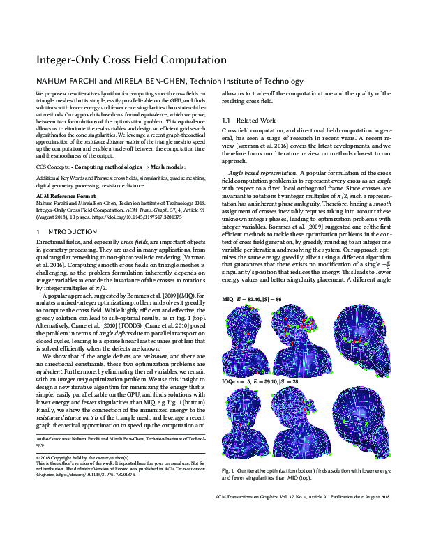 | Integer-only cross field computation
Nahum Farchi, Mirela Ben-Chen | | preprint | 2018 | Geometry | × | ✔️ | 5 |
× | | 2 | 2 | |
| Learning to be a depth camera for close-range human capture and interaction
Sean Ryan Fanello, Tim Paek, Cem Keskin, Shahram Izadi, Pushmeet Kohli, David Kim, David Sweeney, Antonio Criminisi, Jamie Shotton, Sing Bing Kang | | preprint | 2014 | Animation | × | × | |
× | | 0 | 71 | 5.75 |
 | 3D Object Manipulation in a Single Image using Stock 3D Models
Natasha Kholgade, Tomas Simon, Alexei Efros, Yaser Sheikh | | preprint | 2014 | Image | × | ✔️ | 2 |
× | | 1 | 136 | 3 |
| 3D printing spatially varying color and translucency
Alan Brunton, Can Ates Arikan, Tejas Madan Tanksale, Philipp Urban | | preprint | 2018 | Fabrication | × | × | |
× | | 0 | 3 | |
 | A Compiler for 3D Machine Knitting
James McCann, Lea Albaugh, Vidya Narayanan, April Grow, Wojciech Matusik, Jen Mankoff, Jessica Hodgins | | preprint | 2016 | Fabrication | × | × | |
✔️ | 1 | 0 | 40 | |
| A Comprehensive Framework for Rendering Layered Materials
Wenzel Jakob, Eugene d'Eon, Otto Jakob, Steve Marschner | | preprint | 2014 | Rendering | × | ✔️ | 1 |
× | | 0 | 63 | |
| A Compressive Light Field Projection System
Matthew Hirsch, Gordon Wetzstein, Ramesh Raskar | | preprint | 2014 | Virtual Reality | × | ✔️ | 4 |
× | 1 | 1 | 72 | 3.25 |
| A Constructive Theory of Sampling for Image Synthesis using Reproducing Kernel Bases
Christian Lessig, Mathieu Desbrun, Eugene Fiume | | preprint | 2014 | Rendering | × | × | |
✔️ | 2 | 0 | 8 | |
| 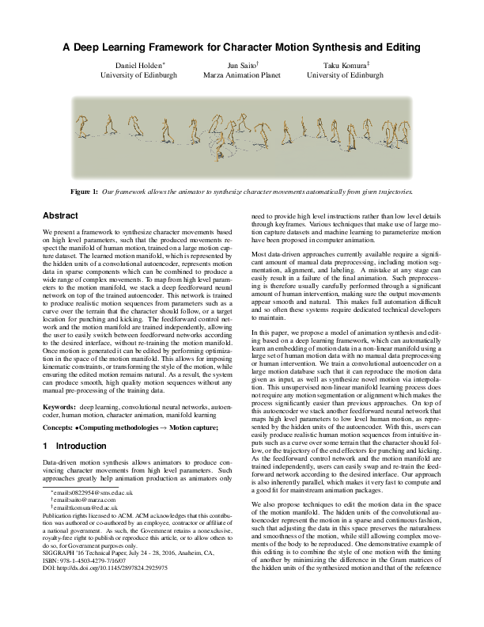 | A Deep Learning Framework for Character Motion Synthesis and Editing
Daniel Holden, Jun Saito, Taku Komura | | preprint | 2016 | Animation | × | × | |
× | | 0 | 179 | |
| A Material Point Method for Thin Shells with Frictional Contact
Qi Guo, Xuchen Han, Chuyuan Fu, Theodore Gast, Rasmus Tamstorf, Joseph Teran | | preprint | 2018 | Animation | × | × | |
× | | 0 | 12 | |
 | A moving least squares material point method with displacement discontinuity and two-way rigid body coupling
Yuanming Hu, Yu Fang, Ziheng Ge, Ziyin Qu, Yixin Zhu, Andre Pradhana, Chenfanfu Jiang | | preprint | 2018 | Animation | × | ✔️ | 4 |
× | | 2 | 25 | |
| A multi-scale model for simulating liquid-fabric interactions
Yun (Raymond) Fei, Christopher Batty, Eitan Grinspun, Changxi Zheng | | preprint | 2018 | Animation | ✔️ | ✔️ | 5 |
× | | 1 | 8 | |
| A radiative transfer framework for spatially-correlated materials
Adrian Jarabo, Carlos Aliaga, Diego Gutierrez | | preprint | 2018 | Rendering | × | × | |
× | | 0 | 14 | 21.3 |
| A Reduced Model for Interactive Hairs
Menglei Chai, Changxi Zheng, Kun Zhou | | preprint | 2014 | Animation | × | × | |
✔️ | 1 | 0 | 32 | |
| A Reflectance Display
Daniel Glasner, Todd Zickler, Anat Levin | | preprint | 2014 | Virtual Reality | × | × | |
× | | 0 | 15 | |
| A Semi-Implicit Material Point Method for the Continuum Simulation of Granular Materials
Gilles Daviet, Florence Bertails-Descoubes | | preprint | 2016 | Animation | × | ✔️ | 5 |
× | | 1 | 42 | |
| A Similarity Measure for Illustration Style
Elena Garces, Aseem Agarwala, Diego Gutierrez, Aaron Hertzmann | | preprint | 2014 | Image | × | × | |
× | | 0 | 75 | |
| A System for Rapid Exploration of Shader Optimization Choices
Yong He, Tim Foley, Kayvon Fatahalian | | preprint | 2016 | Rendering | × | ✔️ | 1 |
× | | 1 | 10 | |
| Accelerated Quadratic Proxy for Geometric Optimization
Shahar Z. Kovalsky, Meirav Galun, Yaron Lipman | | preprint | 2016 | Geometry | × | ✔️ | 5 |
× | | 1 | 43 | |
 | Acoustic Voxels: Computational Optimization of Modular Acoustic Filters
Dingzeyu Li, David I. W. Levin, Wojciech Matusik, Changxi Zheng | | preprint | 2016 | Fabrication | × | × | |
✔️ | 1 | 0 | 35 | 45.08 |
| Active Volumetric Musculoskeletal Systems
Ye Fan, Joshua Litven, Dinesh K. Pai | | preprint | 2014 | Animation | × | × | |
✔️ | 1 | 0 | 39 | |
| Adaptive Nonlinearity for Collisions in Complex Rod Assemblies
Danny M. Kaufman, Rasmus Tamstorf, Breannan Smith, Jean-Marie Aubry, Eitan Grinspun | | preprint | 2014 | Animation | × | × | |
✔️ | 2 | 0 | 41 | |
| Adaptive Polynomial Rendering
Bochang Moon, Steven McDonagh, Kenny Mitchell, Markus Gross | | preprint | 2016 | Rendering | × | × | |
× | | 0 | 31 | |
 | Adaptive Tearing and Cracking of Thin Sheets
Tobias Pfaff, Rahul Narain, Juan Miguel de Joya, James F. O'Brien | | preprint | 2014 | Animation | × | ✔️ | 0 |
× | | 1 | 64 | |
| Additive Light Field Displays: Realization of Augmented Reality with Holographic Optical Elements
Seungjae Lee, Changwon Jang, Seokil Moon, Jaebum Cho, Byoungho Lee | | preprint | 2016 | Virtual Reality | × | × | |
× | | 0 | 79 | |
| Adjoint-Driven Russian Roulette and Splitting in Light Transport Simulation
Jiří Vorba, Jaroslav Křivánek | | preprint | 2016 | Rendering | × | × | |
✔️ | 1 | 0 | 18 | |
| All-Hex Meshing using Closed-Form Induced Polycube
Xianzhong Fang, Weiwei Xu, Hujun Bao, Jin Huang | | preprint | 2016 | Geometry | × | ✔️ | 1 |
× | | 1 | 41 | |
| AMFS: adaptive multi-frequency shading for future graphics processors
Petrik Clarberg, Robert Toth, Jon Hasselgren, Jim Nilsson, Tomas Akenine-Möller | | preprint | 2014 | Rendering | × | × | |
× | | 0 | 32 | 3 |
| An advection-reflection solver for detail-preserving fluid simulation
Jonas Zehnder, Rahul Narain, Bernhard Thomaszewski | | preprint | 2018 | Animation | × | ✔️ | 5 |
× | | 1 | 9 | |
 | An Asymptotic Numerical Method for Inverse Elastic Shape Design
Xiang Chen, Changxi Zheng, Weiwei Xu, Kun Zhou | | preprint | 2014 | Fabrication | × | ✔️ | 5 |
× | | 0 | 67 | |
| An empirical rig for jaw animation
Gaspard Zoss, Derek Bradley, Pascal Bérard, Thabo Beeler | | preprint | 2018 | Animation | × | × | |
× | | 0 | 7 | |
| An extended partitioned method for conservative solid-fluid coupling
Muzaffer Akbay, Nicholas Nobles, Victor Zordan, Tamar Shinar | | preprint | 2018 | Animation | × | × | |
✔️ | 1 | 0 | 5 | |
| An implicit frictional contact solver for adaptive cloth simulation
Jie Li, Gilles Daviet, Rahul Narain, Florence Bertails-Descoubes, Matthew Overby, George E. Brown, Laurence Boissieux | | preprint | 2018 | Animation | ✔️ | ✔️ | 5 |
× | | 1 | 6 | |
| An Interaction-Aware, Perceptual Model for Non-Linear Elastic Objects
Michal Piovarči, David I. W. Levin, Jason Rebello, Desai Chen, Roman Ďurikovič, Hanspeter Pfister, Wojciech Matusik, Piotr Didyk | | preprint | 2016 | Fabrication | × | × | |
× | | 0 | 10 | |
| Analytic spherical harmonic coefficients for polygonal area lights
Jingwen Wang, Ravi Ramamoorthi | | preprint | 2018 | Rendering | × | ✔️ | 1 |
× | | 0 | 2 | |
| Anatomically-Constrained Local Deformation Model for Monocular Face Capture
Chenglei Wu, Derek Bradley, Markus Gross, Thabo Beeler | | preprint | 2016 | Animation | × | × | |
× | | 0 | 42 | |
| Anderson acceleration for geometry optimization and physics simulation
Yue Peng, Bailin Deng, Juyong Zhang, Fanyu Geng, Wenjie Qin, Ligang Liu | | preprint | 2018 | Animation | × | ✔️ | 5 |
× | | 2 | 19 | 1 |
| Animating Deformable Objects using Sparse Spacetime Constraints
Christian Schulz, Christoph von Tycowicz, Hans-Peter Seidel, Klaus Hildebrandt | | preprint | 2014 | Animation | × | × | |
× | | 0 | 35 | |
| Animating fluid sediment mixture in particle-laden flows
Ming Gao, Andre Pradhana, Xuchen Han, Qi Guo, Grant Kot, Eftychios Sifakis, Chenfanfu Jiang | | preprint | 2018 | Animation | × | × | |
× | | 0 | 17 | |
| Artist-Directed Dynamics for 2D Animation
Yunfei Bai, Danny M. Kaufman, C. Karen Liu, Jovan Popović | | preprint | 2016 | Animation | × | × | |
× | | 0 | 18 | |
| Augmented MPM for phase-change and varied materials
Alexey Stomakhin, Craig Schroeder, Chenfanfu Jiang, Lawrence Chai, Joseph Teran, Andrew Selle | | preprint | 2014 | Animation | × | × | |
✔️ | 1 | 0 | 93 | |
| Autocomplete 3D sculpting
Mengqi Peng, Jun Xing, Li-Yi Wei | | preprint | 2018 | Geometry | × | × | |
✔️ | 1 | 0 | 7 | |
| AutoHair: Fully Automatic Hair Modeling from A Single Image
Menglei Chai, Tianjia Shao, Hongzhi Wu, Yanlin Weng, Kun Zhou | | preprint | 2016 | Geometry | × | × | |
× | | 0 | 49 | 1 |
| Automatic Editing of Footage from Multiple Social Cameras
Ido Arev, Hyun Soo Park, Yaser Sheikh, Jessica Hodgins, Ariel Shamir | | preprint | 2014 | Image | × | × | |
× | | 0 | 102 | |
| Automatic Triage for a Photo Series
Huiwen Chang, Fisher Yu, Jue Wang, Douglas Ashley, Adam Finkelstein | | preprint | 2016 | Image | × | ✔️ | 1 |
× | | 0 | 25 | |
 | Automatically Scheduling Halide Image Processing Pipelines
Ravi Teja Mullapudi, Andrew Adams, Dillon Sharlet, Jonathan Ragan-Kelley, Kayvon Fatahalian | | preprint | 2016 | Image | × | ✔️ | 2 |
× | | 2 | 75 | |
| AverageExplorer: interactive exploration and alignment of visual data collections
Jun-Yan Zhu, Yong Jae Lee, Alexei A. Efros | | preprint | 2014 | Image | × | × | |
× | | 0 | 43 | |
| Bayesian online regression for adaptive direct illumination sampling
Petr Vévoda, Ivo Kondapaneni, Jaroslav Křivánek | | preprint | 2018 | Rendering | × | ✔️ | 0 |
× | | 1 | 10 | |
| 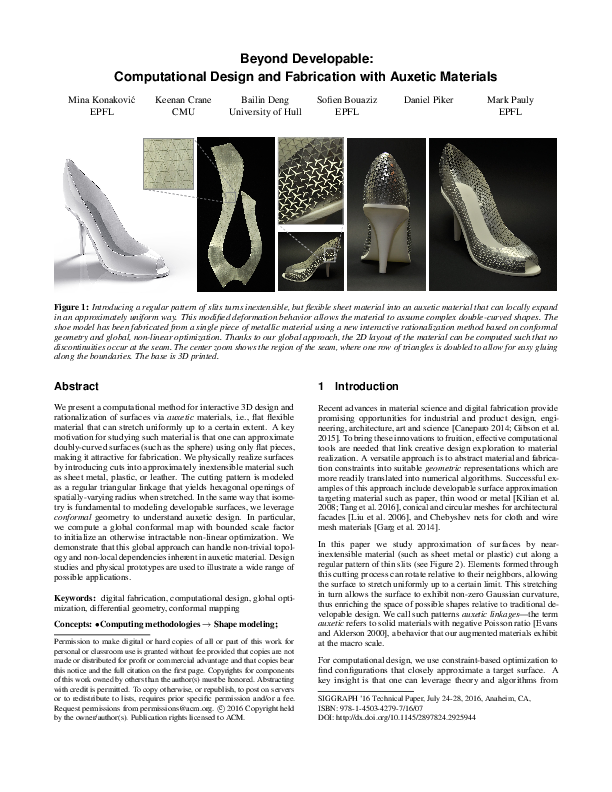 | Beyond Developable: Computational Design and Fabrication with Auxetic Materials
Mina Konaković, Keenan Crane, Bailin Deng, Sofien Bouaziz, Daniel Piker, Mark Pauly | | preprint | 2016 | Fabrication | × | × | |
✔️ | 1 | 0 | 65 | |
| Bijective Maps from Simplicial Foliations
Marcel Campen, Cláudio T. Silva, Denis Zorin | | preprint | 2016 | Geometry | × | × | |
✔️ | 3 | 0 | 17 | |
| Bilateral Texture Filtering
Hojin Cho, Hyunjoon Lee, Henry Kang, Seungyong Lee | | preprint | 2014 | Image | × | × | |
✔️ | 4 | 0 | 127 | 3 |
 | Binary continuous image decomposition for multi-view display
Gou Koutaki | | preprint | 2016 | Virtual Reality | × | ✔️ | 5 |
× | | 1 | 8 | 11.3 |
| Blended cured quasi-newton for distortion optimization
Yufeng Zhu, Robert Bridson, Danny M. Kaufman | | preprint | 2018 | Geometry | × | ✔️ | 5 |
× | | 0 | 17 | |
| Blending Liquids
Karthik Raveendran, Chris Wojtan, Nils Thuerey, Greg Turk | | preprint | 2014 | Animation | × | × | |
✔️ | 1 | 0 | 33 | |
| 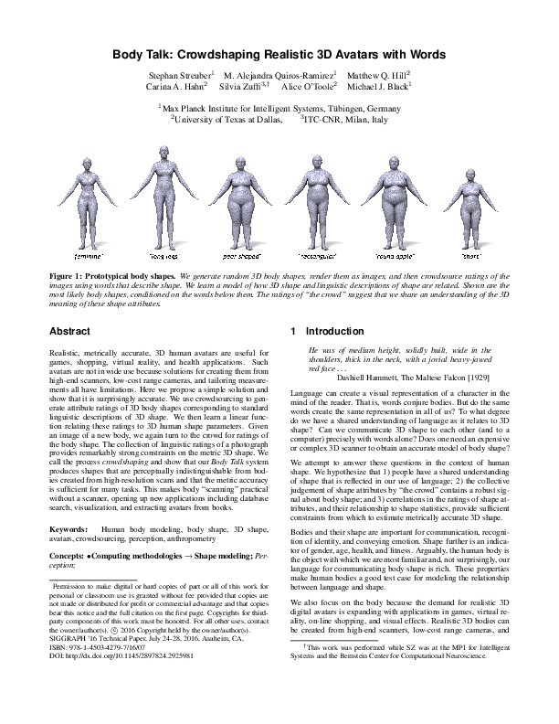 | Body Talk: Crowdshaping Realistic 3D Avatars with Words
Stephan Streuber, M. Alejandra Quiros-Ramirez, Matthew Q. Hill, Carina A. Hahn, Silvia Zuffi, Alice O'Toole, Michael J. Black | | preprint | 2016 | Geometry | × | × | |
× | | 0 | 28 | 230 |
 | Bounded distortion harmonic shape interpolation
Edward Chien, Renjie Chen, Ofir Weber | | preprint | 2016 | Geometry | × | ✔️ | 5 |
× | | 1 | 17 | |
| Box cutter: atlas refinement for efficient packing via void elimination
Max Limper, Nicholas Vining, ALLA SHEFFER | | preprint | 2018 | Geometry | × | ✔️ | 5 |
× | | 1 | 2 | |
| Boxelization: Folding 3D Objects into Boxes
Yahan Zhou, Shinjiro Sueda, Wojciech Matusik, Ariel Shamir | | preprint | 2014 | Geometry | × | × | |
× | | 0 | 59 | 4.85 |
| Breathing Life into Shape: Capturing, Modeling and Animating 3D Human Breathing
Aggeliki Tsoli, Naureen Mahmood, Michael J. Black | | preprint | 2014 | Animation | × | × | |
× | | 0 | 39 | 3 |
| Bridging the Gap: Automated Steady Scaffoldings for 3D Printing
Jérémie Dumas, Jean Hergel, Sylvain Lefebvre | | preprint | 2014 | Fabrication | × | × | |
× | | 0 | 122 | 6 |
| Build-to-Last: Strength to Weight 3D Printed Objects
Lin Lu, Baoquan Chen, Andrei Sharf, Haisen Zhao, Yuan Wei, Qingnan Fan, Xuelin Chen, Yann Savoye, Changhe Tu, Daniel Cohen-Or | | preprint | 2014 | Fabrication | × | × | |
× | | 0 | 224 | 6 |
| Capturing and Stylizing Hair for 3D Fabrication
Jose I. Echevarria, Derek Bradley, Diego Gutierrez, Thabo Beeler | | preprint | 2014 | Fabrication | × | × | |
× | | 0 | 41 | 10 |
| Cascaded Displays: Spatiotemporal Superresolution using Offset Pixel Layers
Felix Heide, Douglas Lanman, Dikpal Reddy, Jan Kautz, Kari Pulli, David Luebke | | preprint | 2014 | Virtual Reality | × | × | |
× | | 0 | 43 | |
| Cinema 3D: Large Scale Automultiscopic Display
Netalee Efrat, Piotr Didyk, Mike Foshey, Wojciech Matusik, Anat Levin | | preprint | 2016 | Virtual Reality | × | × | |
× | | 0 | 14 | 38.866 |
| Codimensional Surface Tension Flow on Simplicial Complices
Bo Zhu, Ed Quigley, Matthew Cong, Justin Solomon, Ronald Fedkiw | | preprint | 2014 | Animation | × | × | |
✔️ | 1 | 0 | 33 | |
| CofiFab: Coarse-to-Fine Fabrication of Large 3D Objects
Peng Song, Bailin Deng, Ziqi Wang, Zhichao Dong, Wei Li, Chi-Wing Fu, Ligang Liu | | preprint | 2016 | Fabrication | × | × | |
× | | 0 | 63 | |
| Color Map Optimization for 3D Reconstruction with Consumer Depth Cameras
Qian-Yi Zhou, Vladlen Koltun | | preprint | 2014 | Geometry | × | × | |
× | | 0 | 137 | |
| 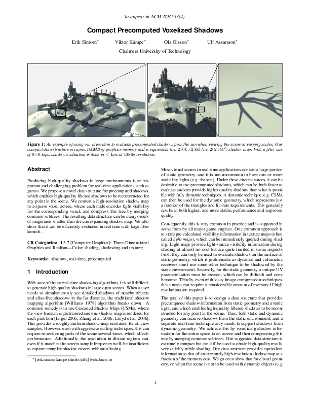 | Compact Precomputed Voxelized Shadows
Erik Sintorn, Viktor Kämpe, Ola Olsson, Ulf Assarsson | | preprint | 2014 | Rendering | × | ✔️ | 3 |
× | | 2 | 31 | 1 |
| Compressive Epsilon Photography for Post-Capture Control in Digital Imaging
Atsushi Ito, Salil Tambe, Kaushik Mitra, Aswin C. Sankaranarayanan, Ashok Veeraraghavan | | preprint | 2014 | Image | × | × | |
× | | 0 | 11 | 3 |
| Computational Design of Linkage-Based Characters
Bernhard Thomaszewski, Stelian Coros, Damien Gauge, Vittorio Megaro, Eitan Grinspun, Markus Gross | | preprint | 2014 | Fabrication | × | × | |
× | | 0 | 97 | |
| Computational design of nanostructural color for additive manufacturing
Thomas Auzinger, Wolfgang Heidrich, Bernd Bickel | | preprint | 2018 | Fabrication | × | × | |
× | | 0 | 7 | 107.448 |
| Computational Design of Reconfigurables
Akash Garg, Alec Jacobson, Eitan Grinspun | | preprint | 2016 | Fabrication | × | × | |
× | | 0 | 14 | |
| Computational Design of Stable Planar-Rod Structures
Eder Miguel, Mathias Lepoutre, Bernd Bickel | | preprint | 2016 | Fabrication | × | × | |
× | | 0 | 19 | |
| Computational Imaging with Multi-Camera Time-of-Flight Systems
Shikhar Shrestha, Felix Heide, Wolfgang Heidrich, Gordon Wetzstein | | preprint | 2016 | Image | × | ✔️ | 0 |
× | | 1 | 43 | |
| Computational Network Design from Functional Specifications
Chi-Han Peng, Yong-Liang Yang, Fan Bao, Daniel Fink, Dong-Ming Yan, Peter Wonka, Niloy J. Mitra | | preprint | 2016 | Geometry | × | × | |
× | | 0 | 24 | 0.25 |
| Computational Thermoforming
Christian Schüller, Daniele Panozzo, Anselm Grundhöfer, Henning Zimmer, Evgeni Sorkine, Olga Sorkine-Hornung | | preprint | 2016 | Fabrication | × | ✔️ | 1 |
× | | 0 | 36 | 15 |
| Computing a high-dimensional euclidean embedding from an arbitrary smooth riemannian metric
Zichun Zhong, Wenping Wang, Bruno Lévy, Jing Hua, Xiaohu Guo | | preprint | 2018 | Geometry | × | × | |
✔️ | 3 | 0 | 4 | |
| Computing layouts with deformable templates
Chi-Han Peng, Yong-Liang Yang, Peter Wonka | | preprint | 2014 | Geometry | × | × | |
× | | 0 | 34 | 3 |
| 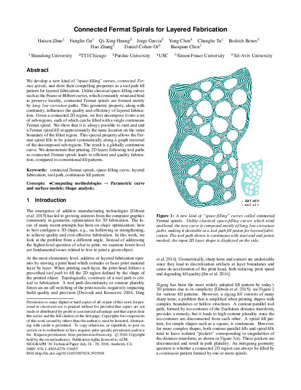 | Connected Fermat Spirals for Layered Fabrication
Haisen Zhao, Baoquan Chen, Fanglin Gu, Qi-Xing Huang, Jorge Garcia, Yong Chen, Changhe Tu, Bedrich Benes, Hao Zhang, Daniel Cohen-Or | | preprint | 2016 | Fabrication | × | × | |
× | | 0 | 45 | |
| 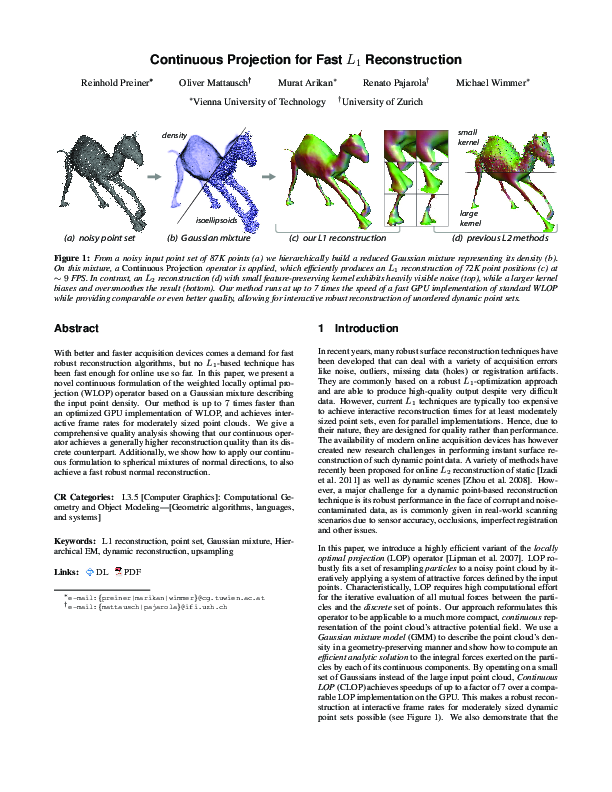 | Continuous Projection for Fast L1 Reconstruction
Reinhold Preiner, Oliver Mattausch, Murat Arikan, Renato Pajarola, Michael Wimmer | | preprint | 2014 | Geometry | × | ✔️ | 2 |
× | | 2 | 28 | |
| Controllable High-Fidelity Facial Performance Transfer
Feng Xu, Jinxiang Chai, Yilong Liu, Xin Tong | | preprint | 2014 | Animation | × | × | |
× | | 0 | 23 | |
| Controlling Singular Values with Semidefinite Programming
Shahar Z. Kovalsky, Noam Aigerman, Ronen Basri, Yaron Lipman | | preprint | 2014 | Geometry | × | ✔️ | 4 |
× | | 1 | 44 | |
| CoreCavity: interactive shell decomposition for fabrication with two-piece rigid molds
Kazutaka Nakashima, Thomas Auzinger, Emmanuel Iarussi, Ran Zhang, Takeo Igarashi, Bernd Bickel | | preprint | 2018 | Fabrication | × | × | |
× | | 0 | 6 | 48.08 |
| Creating and chaining camera moves for qadrotor videography
Ke Xie, Hao Yang, Shengqiu Huang, Dani Lischinski, Marc Christie, Kai Xu, Minglun Gong, Daniel Cohen-Or, Hui Huang | | preprint | 2018 | Animation | × | × | |
× | | 0 | 10 | 1 |
| Crowd-driven Mid-scale Layout Design
Tian Feng, Lap-Fai Yu, Sai-Kit Yeung, KangKang Yin, Kun Zhou | | preprint | 2016 | Geometry | × | × | |
× | | 0 | 36 | |
| cSculpt: A System for Collaborative Sculpting
Claudio Calabrese, Gabriele Salvati, Marco Tarini, Fabio Pellacini | | preprint | 2016 | Geometry | × | × | |
× | | 0 | 8 | |
| Curved optimal delaunay triangulation
Leman Feng, Pierre Alliez, Laurent Busé, Hervé Delingette, Mathieu Desbrun | | preprint | 2018 | Geometry | × | × | |
× | | 0 | 8 | |
| 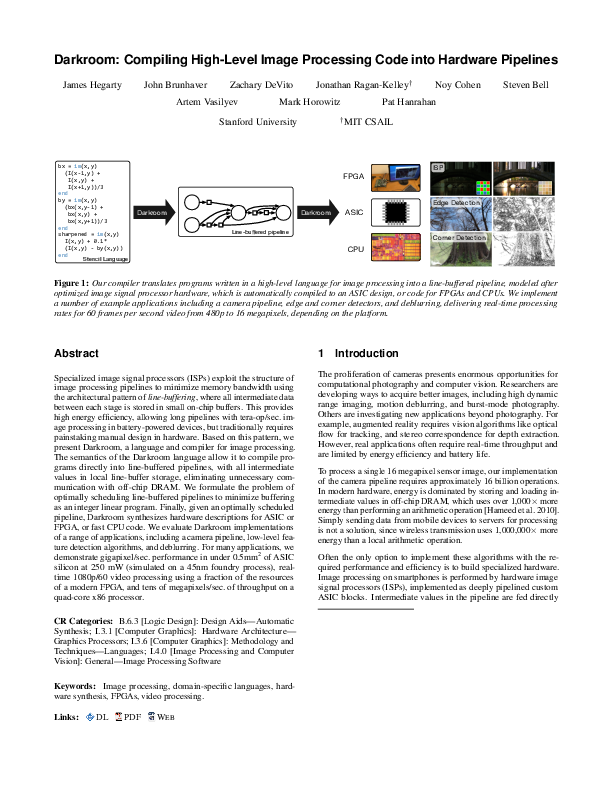 | Darkroom: Compiling High-Level Image Processing Code into Hardware Pipelines
James Hegarty, John Brunhaver, Zachary DeVito, Jonathan Ragan-Kelley, Noy Cohen, Steven Bell, Artem Vasilyev, Mark Horowitz, Pat Hanrahan | | preprint | 2014 | Image | × | ✔️ | 0 |
× | | 1 | 110 | 4 |
| DecoBrush: Drawing Structured Decorative Patterns by Example
Jingwan Lu, Connelly Barnes, Connie Wan, Paul Asente, Radomir Mech, Adam Finkelstein | | preprint | 2014 | Image | × | × | |
× | | 0 | 37 | |
| Deep appearance models for face rendering
Stephen Lombardi, Jason Saragih, Tomas Simon, Yaser Sheikh | | preprint | 2018 | Rendering | × | × | |
× | | 0 | 28 | 3.5 |
| Deep context-aware descreening and rescreening of halftone images
Tae-Hoon Kim, Sang Il Park | | preprint | 2018 | Image | × | × | |
× | | 0 | 4 | 3 |
| Deep convolutional priors for indoor scene synthesis
Kai Wang, Manolis Savva, Angel X. Chang, Daniel Ritchie | | preprint | 2018 | Geometry | × | ✔️ | 0 |
× | | 1 | 29 | |
| 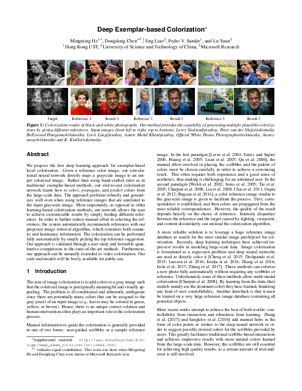 | Deep exemplar-based colorization
Mingming He, Dongdong Chen, Jing Liao, Pedro V. Sander, Lu Yuan | | preprint | 2018 | Image | × | ✔️ | 5 |
× | | 1 | 29 | |
 | Deep image-based relighting from optimal sparse samples
Zexiang Xu, Kalyan Sunkavalli, Sunil Hadap, Ravi Ramamoorthi | | preprint | 2018 | Image | × | ✔️ | 0 |
× | | 1 | 20 | |
| Deep learning of biomimetic sensorimotor control for biomechanical human animation
Masaki Nakada, Tao Zhou, Honglin Chen, Tomer Weiss, Demetri Terzopoulos | | preprint | 2018 | Animation | × | × | |
× | | 0 | 11 | |
| Deep Video Portraits
Hyeongwoo Kim, Christian Theobalt, Pablo Carrido, Ayush Tewari, Weipeng Xu, Justus Thies, Matthias Niessner, Patrick Pérez, Christian Richardt, Michael Zollhöfer | | preprint | 2018 | Image | × | × | |
× | | 0 | 89 | |
| DeepMimic: example-guided deep reinforcement learning of physics-based character skills
Xue Bin Peng, Pieter Abbeel, Sergey Levine, Michiel van de Panne | | preprint | 2018 | Animation | × | ✔️ | 5 |
× | | 1 | 165 | 406.38 |
| Defending Continuous Collision Detection against Errors
Huamin Wang | | preprint | 2014 | Animation | × | × | |
✔️ | 4 | 0 | 40 | |
| Denoising with kernel prediction and asymmetric loss functions
Thijs Vogels, Fabrice Rousselle, Brian Mcwilliams, Gerhard Röthlin, Alex Harvill, David Adler, Mark Meyer, Jan Novák | | preprint | 2018 | Rendering | × | × | |
× | | 0 | 26 | |
| Design and Fabrication by Example
Adriana Schulz, Ariel Shamir, David I. W. Levin, Pitchaya Sitthi-amorn, Wojciech Matusik | | preprint | 2014 | Fabrication | × | × | |
× | | 0 | 61 | |
| Designing Inflatable Structures
Mélina Skouras, Bernhard Thomaszewski, Peter Kaufmann, Akash Garg, Bernd Bickel, Eitan Grinspun, Markus Gross | | preprint | 2014 | Fabrication | × | × | |
× | | 0 | 71 | 0.5 |
 | Designing patterns using triangle-quad hybrid meshes
Chi-Han Peng, Helmut Pottmann, Peter Wonka | | preprint | 2018 | Geometry | × | × | |
✔️ | 1 | 0 | 4 | |
| Designing Structurally-Sound Ornamental Curve Networks
Jonas Zehnder, Stelian Coros, Bernhard Thomaszewski | | preprint | 2016 | Fabrication | × | × | |
× | | 0 | 34 | |
| Detailed Water with Coarse Grids: Combining Surface Meshes and Adaptive Discontinuous Galerkin
Essex Edwards, Robert Bridson | | preprint | 2014 | Animation | × | × | |
✔️ | 1 | 0 | 35 | |
| Developability of triangle meshes
Oded Stein, Eitan Grinspun, Keenan Crane | | preprint | 2018 | Geometry | × | ✔️ | 0 |
× | | 1 | 12 | |
 | Dexterous manipulation and control with volumetric muscles
Seunghwan Lee, Ri Yu, Jungnam Park, Mridul Aanjaneya, Eftychios Sifakis, Jehee Lee | | preprint | 2018 | Animation | × | ✔️ | 1 |
× | | 0 | 13 | |
| Differentiable Programming for Image Processing and Deep Learning in Halide
Tzu-Mao Li, Michaël Gharbi, Andrew Adams, Frédo Durand, Jonathan Ragan-Kelley | | preprint | 2018 | Image | × | ✔️ | 3 |
× | | 2 | 26 | 0.75 |
 | Discrete Stochastic Microfacet Models
Wenzel Jakob, Miloš Hašan, Ling-Qi Yan, Jason Lawrence, Ravi Ramamoorthi, Steve Marschner | | preprint | 2014 | Rendering | × | ✔️ | 1 |
× | | 2 | 52 | |
| Displaced Dynamic Expression Regression for Real-time Facial Tracking and Animation
Chen Cao, Qiming Hou, Kun Zhou | | preprint | 2014 | Animation | × | × | |
× | | 0 | 257 | 3 |
| Drucker-Prager Elastoplasticity for Sand Animation
Gergely Klár, Theodore Gast, Andre Pradhana, Chuyuan Fu, Craig Schroeder, Chenfanfu Jiang, Joseph Teran | | preprint | 2016 | Animation | × | × | |
× | | 0 | 58 | |
| DSCarver: decompose-and-spiral-carve for subtractive manufacturing
Haisen Zhao, Hao Zhang, Shiqing Xin, Yuanmin Deng, Changhe Tu, Wenping Wang, Daniel Cohen-Or, Baoquan Chen | | preprint | 2018 | Fabrication | × | × | |
× | | 0 | 7 | |
| Dynamic kelvinlets: secondary motions based on fundamental solutions of elastodynamics
Fernando De Goes, Doug L. James | | preprint | 2018 | Animation | × | ✔️ | 4 |
× | | 2 | 5 | |
| Dynamic Ray Stream Traversal
Rasmus Barringer, Tomas Akenine-Möller | | preprint | 2014 | Rendering | × | ✔️ | 5 |
× | | 1 | 33 | |
| Efficient and Precise Interactive Hand Tracking Through Joint, Continuous Optimization of Pose and Correspondences
Jonathan Taylor, Benjamin Luff, Arran Topalian, Erroll Wood, Sameh Khamis, Pushmeet Kohli, Shahram Izadi, Richard Banks, Andrew Fitzgibbon, Jamie Shotton, Lucas Bordeaux, Thomas Cashman, Bob Corish, Cem Keskin, Toby Sharp, Eduardo Soto, David Sweeney, Julien Valentin | | preprint | 2016 | Virtual Reality | × | × | |
× | | 0 | 168 | |
| Efficient dynamic skinning with low-rank helper bone controllers
Tomohiko Mukai, Shigeru Kuriyama | | preprint | 2016 | Animation | × | × | |
× | | 0 | 15 | |
| Efficient GPU Rendering of Subdivision Surfaces using Adaptive Quadtrees
Wade Brainerd, Tim Foley, Manuel Kraemer, Henry Moreton, Matthias Nießner | | preprint | 2016 | Rendering | × | × | |
× | | 0 | 12 | |
| Efficient reflectance capture using an autoencoder
Kaizhang Kang, Zimin Chen, Jiaping Wang, Kun Zhou, Hongzhi Wu | | preprint | 2018 | Rendering | × | × | |
× | | 0 | 11 | |
| Efficient rendering of layered materials using an atomic decomposition with statistical operators
Laurent Belcour | | preprint | 2018 | Rendering | × | ✔️ | 5 |
× | | 1 | 11 | |
| Eigenmode Compression for Modal Sound Models
Timothy R. Langlois, Steven S. An, Kelvin K. Jin, Doug L. James | | preprint | 2014 | Animation | × | × | |
× | | 0 | 38 | 3 |
| Embree: a kernel framework for efficient CPU ray tracing
Ingo Wald, Sven Woop, Carsten Benthin, Gregory S. Johnson, Manfred Ernst | | preprint | 2014 | Rendering | × | ✔️ | 5 |
× | | 2 | 248 | |
| Emulating Displays with Continuously Varying Frame Rates
Krzysztof Templin, Piotr Didyk, Karol Myszkowski, Hans-Peter Seidel | | preprint | 2016 | Image | × | × | |
× | | 0 | 11 | 1 |
| End-to-end Optimization of Optics and Image Processing for Achromatic Extended Depth of Field and Super-resolution Imaging
Vincent Sitzmann, Steven Diamond, Yifan Peng, Xiong Dun, Stephen Boyd, Wolfgang Heidrich, Felix Heide, Gordon Wetzstein | | preprint | 2018 | Image | × | ✔️ | 3 |
× | | 1 | 26 | |
| Entropic Metric Alignment for Correspondence Problems
Justin Solomon, Gabriel Peyré, Vladimir G. Kim, Suvrit Sra | | preprint | 2016 | Geometry | × | ✔️ | 5 |
× | | 0 | 64 | 1 |
| Erosion thickness on medial axes of 3D shapes
Yajie Yan, Kyle Sykes, Erin Chambers, David Letscher, Tao Ju | | preprint | 2016 | Geometry | × | ✔️ | 4 |
× | | 1 | 22 | |
| Estimating Image Depth Using Shape Collections
Hao Su, Qixing Huang, Niloy J. Mitra, Yangyan Li, Leonidas Guibas | | preprint | 2014 | Image | × | × | |
× | | 0 | 88 | |
 | Eulerian-on-lagrangian cloth simulation
Nicholas J. Weidner, Kyle Piddington, David I. W. Levin, Shinjiro Sueda | | preprint | 2018 | Animation | × | ✔️ | 0 |
× | | 1 | 4 | |
| Example-based Plastic Deformation of Rigid Bodies
Ben Jones, Nils Thuerey, Tamar Shinar, Adam W. Bargteil | | preprint | 2016 | Animation | × | × | |
✔️ | 1 | 0 | 16 | |
 | Example-based Turbulence Style Transfer
Syuhei Sato, Yoshinori Dobashi, Theodore Kim, Tomoyuki Nishita | | preprint | 2018 | Animation | × | × | |
× | 2 | 0 | 8 | |
| Exploratory Font Selection Using Crowdsourced Attributes
Peter O'Donovan, Jānis Lībeks, Aseem Agarwala, Aaron Hertzmann | | preprint | 2014 | Image | × | ✔️ | 3 |
× | | 0 | 91 | |
| Extending the graphics pipeline with adaptive, multi-rate shading
Yong He, Yan Gu, Kayvon Fatahalian | | preprint | 2014 | Rendering | × | × | |
✔️ | 4 | 0 | 42 | 9 |
| Eyeglasses-free Display: Towards Correcting Visual Aberrations with Computational Light Field Displays
Fu-Chung Huang, Gordon Wetzstein, Brian A. Barsky, Ramesh Raskar | | preprint | 2014 | Virtual Reality | × | ✔️ | 4 |
× | | 2 | 94 | 42.008 |
| Fabricating reflectors for displaying multiple images
Kaisei Sakurai, Yoshinori Dobashi, Kei Iwasaki, Tomoyuki Nishita | | preprint | 2018 | Fabrication | × | × | |
× | | 0 | 1 | |
| Faceshop: deep sketch-based face image editing
Tiziano Portenier, Qiyang Hu, Attila Szabó, Siavash Arjomand Bigdeli, Paolo Favaro, Matthias Zwicker | | preprint | 2018 | Image | × | × | |
× | | 0 | 27 | |
| Factored Axis-Aligned Filtering for Rendering Multiple Distribution Effects
Soham Uday Mehta, JiaXian Yao, Ravi Ramamoorthi, Fredo Durand | | preprint | 2014 | Rendering | × | × | |
× | | 0 | 21 | 3 |
| Fast and deep deformation approximations
Stephen W. Bailey, Dave Otte, Paul Dilorenzo, James F. O'Brien | | preprint | 2018 | Animation | × | × | |
× | | 0 | 9 | |
 | Fast and Exact Discrete Geodesic Computation Based on Triangle-Oriented Wavefront Propagation
Yipeng Qin, Xiaoguang Han, Hongchuan Yu, Yizhou Yu, Jianjun Zhang | | preprint | 2016 | Geometry | × | ✔️ | 5 |
× | | 1 | 24 | |
| 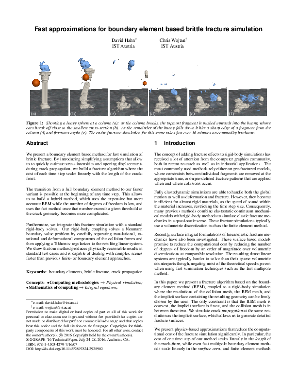 | Fast approximations for boundary element based brittle fracture simulation
David Hahn, Chris Wojtan | | preprint | 2016 | Animation | × | ✔️ | 0 |
× | | 0 | 13 | |
| Fast Multipole Representation of Diffusion Curves and Points
Timothy Sun, Papoj Thamjaroenporn, Changxi Zheng | | preprint | 2014 | Image | × | × | |
✔️ | 2 | 0 | 18 | |
 | Fast winding numbers for soups and clouds
Gavin Barill, Neil G. Dickson, Ryan Schmidt, David I. W. Levin, Alec Jacobson | | preprint | 2018 | Geometry | × | ✔️ | 3 |
× | | 1 | 8 | |
 | FEPR: Fast Energy Projection for Real-Time Simulation of Deformable Objects
Dimitar Dinev, Tiantian Liu, Jing Li, Bernhard Thomaszewski, Ladislav Kavan | | preprint | 2018 | Animation | × | × | |
× | | 0 | 3 | |
| Fidelity vs. Simplicity: a Global Approach to Line Drawing Vectorization
Jean-Dominique Favreau, Florent Lafarge, Adrien Bousseau | | preprint | 2016 | Image | × | ✔️ | 5 |
× | | 0 | 41 | 1 |
| First-person Hyper-lapse videos
Johannes Kopf, Michael F. Cohen, Richard Szeliski | | preprint | 2014 | Image | × | ✔️ | 4 |
× | | 0 | 165 | 12 |
| Fitting Procedural Yarn Models for Realistic Cloth Rendering
Shuang Zhao, Fujun Luan, Kavita Bala | | preprint | 2016 | Rendering | × | ✔️ | 3 |
× | | 0 | 29 | 78 |
| Floating Scale Surface Reconstruction
Simon Fuhrmann, Michael Goesele | | preprint | 2014 | Geometry | × | ✔️ | 4 |
× | | 2 | 113 | |
| Flow-Guided Warping for Image-Based Shape Manipulation
Romain Vergne, Pascal Barla, Georges-Pierre Bonneau, Roland W. Fleming | | preprint | 2016 | Image | × | × | |
× | | 0 | 2 | |
| Flower Modeling via X-ray Computed Tomography
Takashi Ijiri, Shin Yoshizawa, Hideo Yokota, Takeo Igarashi | | preprint | 2014 | Geometry | × | ✔️ | 5 |
× | | 1 | 27 | |
| Fluid directed rigid body control using deep reinforcement learning
Pingchuan Ma, Yunsheng Tian, Zherong Pan, Bo Ren, Dinesh Manocha | | preprint | 2018 | Animation | × | × | |
✔️ | 3 | 0 | 10 | |
| Foldsketch: enriching garments with physically reproducible folds
Minchen Li, Alla Sheffer, Eitan Grinspun, Nicholas Vining | | preprint | 2018 | Fabrication | × | × | |
× | | 0 | 10 | |
| Form-finding with polyhedral meshes made simple
Chengcheng Tang, Xiang Sun, Alexandra Gomes, Johannes Wallner, Helmut Pottmann | | preprint | 2014 | Geometry | × | × | |
× | | 0 | 80 | |
| 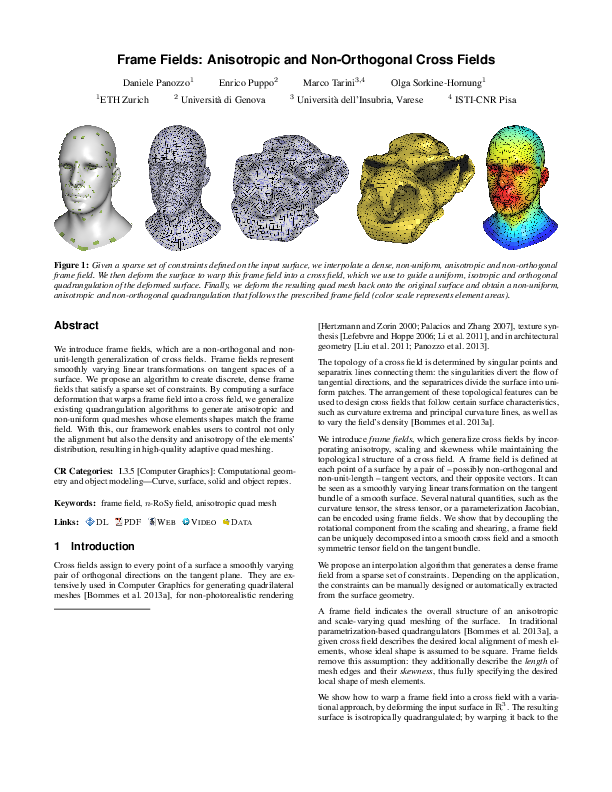 | Frame Fields: Anisotropic and Non-Orthogonal Cross Fields
Daniele Panozzo, Enrico Puppo, Marco Tarini, Olga Sorkine-Hornung | | preprint | 2014 | Geometry | × | ✔️ | 3 |
× | | 1 | 60 | |
| From capture to simulation: connecting forward and inverse problems in fluids
James Gregson, Ivo Ihrke, Nils Thuerey, Wolfgang Heidrich | | preprint | 2014 | Animation | × | × | |
✔️ | 4 | 0 | 51 | 45 |
| Full 3D Reconstruction of Transparent Objects
Bojian Wu, Yang Zhou, Yiming Qian, Minglun Cong, Hui Huang | | preprint | 2018 | Image | × | ✔️ | 0 |
× | | 0 | 5 | |
| Functional Map Networks for Analyzing and Browsing Large Shape Collections
Qixing Huang, Fan Wang, Leonidas Guibas | | preprint | 2014 | Geometry | × | × | |
× | | 0 | 106 | |
| Fusion4D: Real-time Performance Capture of Challenging Scenes
Mingsong Dou, Jonathan Taylor, Pushmeet Kohli, Vladimir Tankovich, Shahram Izadi, Sameh Khamis, Yury Degtyarev, Philip Davidson, Sean Ryan Fanello, Adarsh Kowdle, Sergio Orts Escolano, Christoph Rhemann, David Kim | | preprint | 2016 | Animation | × | × | |
× | | 0 | 199 | 3.9 |
| G1 Non-Uniform Catmull-Clark Surfaces
Xin Li, G. Thomas Finnigan, Thomas W. Sederberg | | preprint | 2016 | Geometry | × | × | |
× | | 0 | 9 | |
 | Gaussian material synthesis
Károly Zsolnai-Fehér, Peter Wonka, Michael Wimmer | | preprint | 2018 | Rendering | × | ✔️ | 2 |
× | | 1 | 11 | 10.5 |
| GazeStereo3D: Seamless Disparity Manipulations
Petr Kellnhofer, Piotr Didyk, Karol Myszkowski, Mohamed M. Hefeeda, Hans-Peter Seidel, Wojciech Matusik | | preprint | 2016 | Virtual Reality | × | ✔️ | 5 |
× | | 1 | 18 | |
| genBRDF: Discovering New Analytic BRDFs with Genetic Programming
Adam Brady, Jason Lawrence, Pieter Peers, Westley Weimer | | preprint | 2014 | Rendering | × | × | |
× | | 0 | 42 | |
| Generalized motorcycle graphs for imperfect quad-dominant meshes
Nico Schertler, Daniele Panozzo, Stefan Gumhold, Marco Tarini | | preprint | 2018 | Geometry | × | ✔️ | 1 |
× | | 1 | 2 | |
| Generalized Non-Reflecting Boundaries for Fluid Re-Simulation
Morten Bojsen-Hansen, Chris Wojtan | | preprint | 2016 | Animation | × | ✔️ | 3 |
× | | 1 | 6 | |
| Generalizing Locomotion Style to New Animals With Inverse Optimal Regression
Kevin Wampler, Zoran Popović, Jovan Popović | | preprint | 2014 | Animation | × | × | |
× | | 0 | 24 | 1 |
| Globally Optimal Toon Tracking
Haichao Zhu, Xueting Liu, Tien-Tsin Wong, Pheng-Ann Heng | | preprint | 2016 | Image | × | × | |
× | | 0 | 5 | |
| Gradient-domain processing within a texture atlas
Fabián Prada, Misha Kazhdan, Ming Chuang, Hugues Hoppe | | preprint | 2018 | Geometry | × | ✔️ | 5 |
× | | 1 | 4 | |
| Gradient-domain Volumetric Photon Density Estimation
Adrien Gruson, Binh-Son Hua, Nicolas Vibert, Derek Nowrouzezahrai, Toshiya Hachisuka | | preprint | 2018 | Rendering | × | ✔️ | 5 |
× | | 0 | 7 | |
| HeadOn: Real-time Reenactment of Human Portrait Videos
Justus Thies, Michael Zollhöfer, Christian Theobalt, Marc Stamminger, Matthias Niessner | | preprint | 2018 | Image | × | × | |
× | | 0 | 17 | 3 |
| HexEx: Robust Hexahedral Mesh Extraction
Max Lyon, David Bommes, Leif Kobbelt | | preprint | 2016 | Geometry | × | ✔️ | 4 |
× | | 1 | 26 | |
| High-contrast Computational Caustic Design
Yuliy Schwartzburg, Romain Testuz, Andrea Tagliasacchi, Mark Pauly | | preprint | 2014 | Fabrication | × | × | |
✔️ | 1 | 0 | 74 | 3 |
| High-fidelity facial reflectance and geometry inference from an unconstrained image
Shuco Yamaguchi, Shunsuke Saito, Koki Nagano, Yajie Zhao, Weikai Chen, Kyle Olszewski, Shigeo Morishima, Hao Li | | preprint | 2018 | Image | × | × | |
× | | 0 | 26 | 1 |
| High-order diffraction and diffuse reflections for interactive sound propagation in large environments
Carl Schissler, Ravish Mehra, Dinesh Manocha | | preprint | 2014 | Animation | × | × | |
× | | 0 | 61 | 3 |
| High-Order Similarity Relations in Radiative Transfer
Shuang Zhao, Ravi Ramamoorthi, Kavita Bala | | preprint | 2014 | Rendering | × | ✔️ | 5 |
× | | 1 | 19 | 1 |
 | How do people edit light fields?
Adrian Jarabo, Belen Masia, Adrien Bousseau, Fabio Pellacini, Diego Gutierrez | | preprint | 2014 | Virtual Reality | × | ✔️ | 2 |
× | | 1 | 44 | 6 |
 | Hyper-reduced projective dynamics
Christopher Brandt, Elmar Eisemann, Klaus Hildebrandt | | preprint | 2018 | Animation | × | ✔️ | 5 |
× | | 2 | 13 | |
| 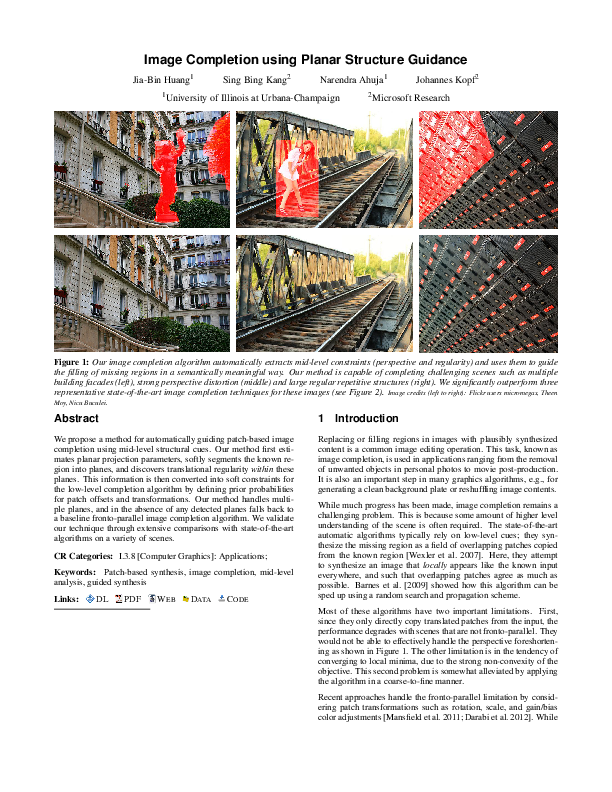 | Image Completion using Planar Structure Guidance
Jia-Bin Huang, Sing Bing Kang, Narendra Ahuja, Johannes Kopf | | preprint | 2014 | Image | × | ✔️ | 1 |
× | | 2 | 253 | 6 |
| Immersion of self-intersecting solids and surfaces
Yijing Li, Jernej Barbič | | preprint | 2018 | Geometry | × | ✔️ | 5 |
× | | 2 | 3 | |
| 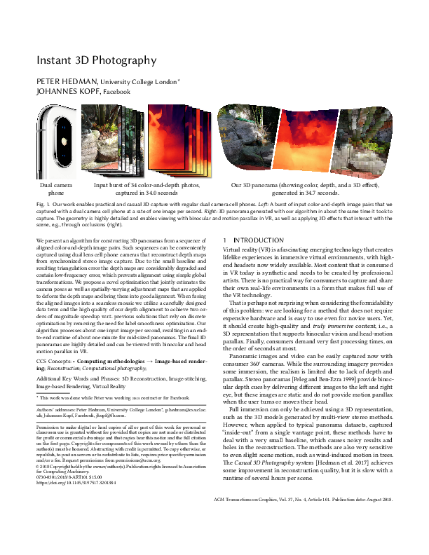 | Instant 3D photography
Peter Hedman, Johannes Kopf | | preprint | 2018 | Image | × | × | |
× | | 0 | 9 | 1 |
| Interactive exploration of design trade-offs
Adriana Schulz, Harrison Wang, Eitan Crinspun, Justin Solomon, Wojciech Matusik | | preprint | 2018 | Fabrication | × | × | |
× | | 0 | 3 | |
| Interactive Manipulation of Large-Scale Crowd Animation
Jongmin Kim, Yeongho Seol, Taesoo Kwon, Jehee Lee | | preprint | 2014 | Animation | × | × | |
× | | 0 | 34 | |
| Interactive Shape Modeling using a Skeleton-Mesh Co-Representation
J. Andreas Bærentzen, Rinat Abdrashitov, Karan Singh | | preprint | 2014 | Geometry | × | × | |
× | | 0 | 29 | |
| Interactive Sketching of Urban Procedural Models
Gen Nishida, Ignacio Garcia-Dorado, Daniel G. Aliaga, Bedrich Benes, Adrien Bousseau | | preprint | 2016 | Geometry | × | ✔️ | 5 |
× | | 0 | 77 | |
| Interactive Tile-based Adaptive Sampling with User-Specified Fourier Spectra
Florent Wachtel, Adrien Pilleboue, David Coeurjolly, Katherine Breeden, Gurprit Singh, Gaël Cathelin, Fernando de Goes, Mathieu Desbrun, Victor Ostromoukhov | | preprint | 2014 | Rendering | × | ✔️ | 5 |
× | | 1 | 48 | |
| Intrinsic Images in the Wild
Sean Bell, Kavita Bala, Noah Snavely | | preprint | 2014 | Image | × | ✔️ | 5 |
× | | 1 | 210 | |
| Intrinsic Video and Applications
Genzhi Ye, Elena Garces, Yebin Liu, Qionghai Dai, Diego Gutierrez | | preprint | 2014 | Image | × | × | |
✔️ | 2 | 0 | 73 | 3 |
| Inverse Procedural Modeling of Facade Layouts
Fuzhang Wu, Dong-Ming Yan, Weiming Dong, Xiaopeng Zhang, Peter Wonka | | preprint | 2014 | Geometry | × | × | |
× | | 0 | 55 | |
 | Inverse-Foley Animation: Synchronizing rigid-body motions to sound
Timothy R. Langlois, Doug L. James | | preprint | 2014 | Animation | × | × | |
× | | 0 | 9 | 1 |
| JALI: An Animator-Centric Viseme Model for Expressive Lip Synchronization
Pif Edwards, Chris Landreth, Eugene Fiume, Karan Singh | | preprint | 2016 | Animation | × | × | |
× | | 0 | 29 | |
| Laplacian kernel splatting for efficient depth-of-field and motion blur synthesis or reconstruction
Thomas Leimkühler, Hans-Peter Seidel, Tobias Ritschel | | preprint | 2018 | Rendering | × | × | |
× | | 0 | 3 | 0.25 |
| Learning a Manifold of Fonts
Neill D. F. Campbell, Jan Kautz | | preprint | 2014 | Geometry | × | ✔️ | 4 |
× | | 0 | 76 | |
| Learning basketball dribbling skills using trajectory optimization and deep reinforcement learning
Libin Liu, Jessica Hodgins | | preprint | 2018 | Animation | × | × | |
✔️ | 1 | 0 | 24 | 5.08 |
| Learning Bicycle Stunts
Jie Tan, Yuting Gu, C. Karen Liu, Greg Turk | | preprint | 2014 | Animation | × | × | |
× | | 0 | 59 | |
| Learning How Objects Function via Co-Analysis of Interactions
Ruizhen Hu, Oliver van Kaick, Bojian Wu, Hui Huang, Ariel Shamir, Hao Zhang | | preprint | 2016 | Geometry | × | × | |
× | | 0 | 38 | |
| Learning symmetric and low-energy locomotion
Wenhao Yu, Greg Turk, C. Karen Liu | | preprint | 2018 | Animation | ✔️ | ✔️ | 3 |
× | | 1 | 28 | 5.85 |
| Learning three-dimensional flow for interactive aerodynamic design
Nobuyuki Umetani, Bernd Bickel | | preprint | 2018 | Animation | × | × | |
× | | 0 | 20 | 35.95 |
| Learning to Simplify: Fully Convolutional Networks for Rough Sketch Cleanup
Edgar Simo-Serra, Satoshi Iizuka, Kazuma Sasaki, Hiroshi Ishikawa | | preprint | 2016 | Image | × | ✔️ | 4 |
× | | 1 | 94 | 31.15 |
| Legible Compact Calligrams
Changqing Zou, Junjie Cao, Warunika Ranaweera, Ibraheem Alhashim, Ping Tan, Alla Sheffer, Hao Zhang | | preprint | 2016 | Image | × | × | |
× | | 0 | 12 | |
 | Let there be color!: joint end-to-end learning of global and local image priors for automatic image colorization with simultaneous classification
Satoshi Iizuka, Edgar Simo-Serra, Hiroshi Ishikawa | | preprint | 2016 | Image | × | ✔️ | 5 |
× | | 1 | 380 | 4.45 |
| Lifted Bijections for Low Distortion Surface Mappings
Noam Aigerman, Roi Poranne, Yaron Lipman | | preprint | 2014 | Geometry | × | × | |
✔️ | 2 | 0 | 68 | |
| Lightweight Eye Capture Using a Parametric Model
Pascal Bérard, Derek Bradley, Markus Gross, Thabo Beeler | | preprint | 2016 | Animation | × | × | |
× | | 0 | 22 | |
| Live intrinsic video
Abhimitra Meka, Michael Zollhöfer, Christian Richardt, Christian Theobalt | | preprint | 2016 | Image | × | × | |
× | | 0 | 44 | 3 |
| Locally Injective Parametrization With Arbitrary Fixed Boundaries
Ofir Weber, Denis Zorin | | preprint | 2014 | Geometry | × | × | |
× | | 0 | 36 | |
| Look Over Here: Attention-Directing Composition of Manga Elements
Ying Cao, Rynson W. H. Lau, Antoni B. Chan | | preprint | 2014 | Image | × | × | |
× | | 0 | 37 | |
| Looking to listen at the cocktail party: a speaker-independent audio-visual model for speech separation
Ariel Ephrat, Inbar Mosseri, Oran Lang, Tali Dekel, Kevin Wilson, Avinatan Hassidim, William T. Freeman, Michael Rubinstein | | preprint | 2018 | Animation | × | × | |
× | | 0 | 129 | 127.13 |
| Magnetization dynamics for magnetic object interactions
Seung-Wook Kim, Sun Young Park, Junghyun Han | | ACM only | 2018 | Animation | × | × | |
× | | 0 | 1 | |
| 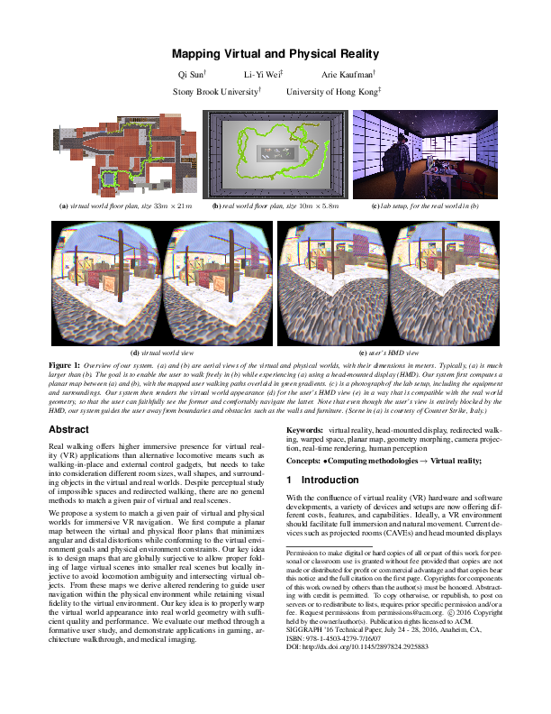 | Mapping Virtual and Physical Reality
Qi Sun, Li-Yi Wei, Arie Kaufman | | preprint | 2016 | Virtual Reality | × | × | |
× | | 0 | 61 | |
| Mechanical characterization of structured sheet materials
Christian Schumacher, Steve Marschner, Markus Cross, Bernhard Thomaszewski | | preprint | 2018 | Animation | × | × | |
× | | 0 | 7 | 5.08 |
| Megapixel Adaptive Optics: Towards Correcting Large-scale Distortions in Computational Cameras
Congli Wang, Qiang Fu, Xiong Dun, Wolfgang Heidrich | | preprint | 2018 | Image | × | ✔️ | 0 |
× | | 1 | 4 | |
| Mesh Arrangements for Solid Geometry
Qingnan Zhou, Eitan Grinspun, Denis Zorin, Alec Jacobson | | preprint | 2016 | Geometry | × | ✔️ | 3 |
× | | 2 | 57 | |
| Meta-representations of Shape Families
Noa Fish, Melinos Averkiou, Oliver van Kaick, Olga Sorkine-Hornung, Daniel Cohen-Or, Niloy J. Mitra | | preprint | 2014 | Geometry | × | × | |
× | | 0 | 66 | 5.488 |
 | Metamolds: computational design of silicone molds
Thomas Alderighi, Luigi Malomo, Daniela Giorgi, Nico Pietroni, Bernd Bickel, Paolo Cignoni | | preprint | 2018 | Fabrication | × | × | |
× | | 0 | 9 | 44.08 |
| Mode-adaptive neural networks for quadruped motion control
He Zhang, Sebastian Starke, Taku Komura, Jun Saito | | preprint | 2018 | Animation | × | ✔️ | 3 |
× | | 0 | 26 | 0.5 |
| Modeling and Optimizing Eye Vergence Response to Stereoscopic Cuts
Krzysztof Templin, Piotr Didyk, Karol Myszkowski, Mohamed M. Hefeeda, Hans-Peter Seidel, Wojciech Matusik | | preprint | 2014 | Virtual Reality | × | × | |
× | | 0 | 20 | |
| Modeling Dense Inflorescences
Andrew Owens, Mikolaj Cieslak, Jeremy Hart, Regine Classen-Bockhoff, Przemyslaw Prusinkiewicz | | preprint | 2016 | Geometry | × | × | |
× | | 0 | 16 | |
| Motion Graphs for Unstructured Textured Meshes
Fabián Prada, Misha Kazhdan, Ming Chuang, Alvaro Collet, Hugues Hoppe | | preprint | 2016 | Animation | × | × | |
✔️ | 1 | 0 | 23 | 3 |
| Multi-Scale Label-Map Extraction for Texture Synthesis
Yitzchak David Lockerman, Basile Sauvage, Rémi Allègre, Jean-Michel Dischler, Julie Dorsey, Holly Rushmeier | | preprint | 2016 | Image | × | ✔️ | 0 |
× | | 0 | 15 | |
| Multi-Scale Rendering of Scratched Materials using a Structured SV-BRDF Model
Boris Raymond, Gaël Guennebaud, Pascal Barla | | preprint | 2016 | Rendering | × | × | |
× | | 0 | 20 | |
| Multi-Scale Simulation of Nonlinear Thin-Shell Sound with Wave Turbulence
Gabriel Cirio, Ante Qu, George Drettakis, Eitan Grinspun, Changxi Zheng | | preprint | 2018 | Animation | × | × | |
× | | 0 | 5 | |
| Multimaterial Mesh-Based Surface Tracking
Fang Da, Christopher Batty, Eitan Grinspun | | preprint | 2014 | Animation | × | ✔️ | 5 |
× | | 0 | 43 | 1 |
| Multiphase SPH Simulation for Interactive Fluids and Solids
Xiao Yan, Yun-Tao Jiang, Chen-Feng Li, Ralph R. Martin, Shi-Min Hu | | preprint | 2016 | Animation | × | × | |
✔️ | 1 | 0 | 37 | 1 |
| Multiple-Scattering Microfacet BSDFs with the Smith Model
Eric Heitz, Johannes Hanika, Eugene d'Eon, Carsten Dachsbacher | | preprint | 2016 | Rendering | × | ✔️ | 5 |
× | | 2 | 58 | |
| Multiplexed Metropolis Light Transport
Toshiya Hachisuka, Anton S. Kaplanyan, Carsten Dachsbacher | | preprint | 2014 | Rendering | × | × | |
× | | 0 | 57 | 1 |
| Neural best-buddies: sparse cross-domain correspondence
Kfir Aberman, Jing Liao, Mingyi Shi, Dani Lischinski, Baoquan Chen, Daniel Cohen-Or | | preprint | 2018 | Image | × | ✔️ | 5 |
× | | 1 | 9 | 24.45 |
 | Non-Linear Shape Optimization Using Local Subspace Projections
Przemyslaw Musialski, Christian Hafner, Florian Rist, Michael Birsak, Michael Wimmer, Leif Kobbelt | | preprint | 2016 | Fabrication | × | ✔️ | 5 |
× | | 1 | 27 | 44 |
| 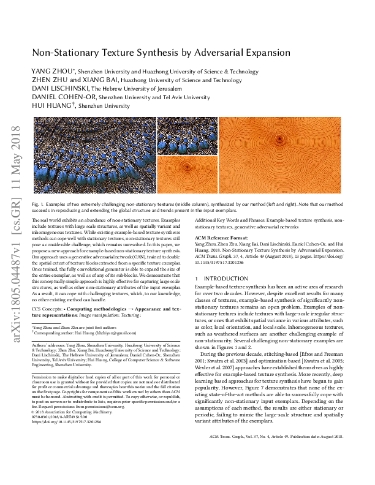 | Non-stationary texture synthesis by adversarial expansion
Yang Zhou, Zhen Zhu, Xiang Bai, Dani Lischinski, Daniel Cohen-Or, Hui Huang | | preprint | 2018 | Image | × | ✔️ | 5 |
× | | 1 | 30 | |
| Numerical Coarsening using Discontinuous Shape Functions
Jiong Chen, Hujun Bao, Tianyu Wang, Mathieu Desbrun, Jin Huang | | preprint | 2018 | Geometry | × | × | |
× | | 0 | 6 | |
| Object-aware guidance for autonomous scene reconstruction
Ligang Liu, Xi Xia, Han Sun, Qi Shen, Juzhan Xu, Bin Chen, Hui Huang, Kai Xu | | preprint | 2018 | Image | × | ✔️ | 0 |
× | | 1 | 5 | 1 |
 | On the Convexity and Feasibility of the Bounded Distortion Harmonic Mapping Problem
Zohar Levi, Ofir Weber | | preprint | 2016 | Geometry | × | × | |
✔️ | 2 | 0 | 9 | |
 | On-line Learning of Parametric Mixture Models for Light Transport Simulation
Jiří Vorba, Ondřej Karlík, Martin Šik, Tobias Ritschel, Jaroslav Křivánek | | preprint | 2014 | Rendering | × | ✔️ | 1 |
× | | 2 | 76 | |
| Online Motion Synthesis Using Sequential Monte Carlo
Perttu Hämäläinen, Sebastian Eriksson, Esa Tanskanen, Ville Kyrki, Jaakko Lehtinen | | preprint | 2014 | Animation | × | × | |
✔️ | 2 | 0 | 58 | |
| Online optical marker-based hand tracking with deep labels
Shangchen Han, Beibei Liu, Robert Wang, Yuting Ye, Christopher D. Twigg, Kenrick Kin | | preprint | 2018 | Animation | × | × | |
× | | 0 | 19 | |
| Optimal cone singularities for conformal flattening
Yousuf Soliman, Dejan Slepčev, Keenan Crane | | preprint | 2018 | Geometry | × | × | |
✔️ | 3 | 0 | 9 | |
| Optimizing for aesthetically pleasing qadrotor camera motion
Christoph Gebhardt, Stefan Stevšić, Otmar Hilliges | | preprint | 2018 | Animation | × | × | |
× | | 0 | 12 | 0.5 |
| Organizing Heterogeneous Scene Collections through Contextual Focal Points
Kai Xu, Rui Ma, Hao Zhang, Chenyang Zhu, Ariel Shamir, Daniel Cohen-Or, Hui Huang | | preprint | 2014 | Geometry | × | × | |
✔️ | 3 | 0 | 40 | |
| P2P-NET: bidirectional point displacement net for shape transform
Kangxue Yin, Hui Huang, Daniel Cohen-Or, Hao Zhang | | preprint | 2018 | Geometry | × | ✔️ | 0 |
× | | 1 | 15 | 4.1 |
| Painting Style Transfer for Head Portraits using Convolutional Neural Networks
Ahmed Selim, Mohamed Elgharib, Linda Doyle | | preprint | 2016 | Image | × | × | |
× | | 0 | 104 | 1.35 |
| Parametric directional coding for precomputed sound propagation
Nikunj Raghuvanshi, John Snyder | | preprint | 2018 | Animation | × | × | |
× | | 0 | 9 | |
| Parametric Wave Field Coding for Precomputed Sound Propagation
Nikunj Raghuvanshi, John Snyder | | preprint | 2014 | Animation | × | × | |
× | | 0 | 43 | 21.55 |
| 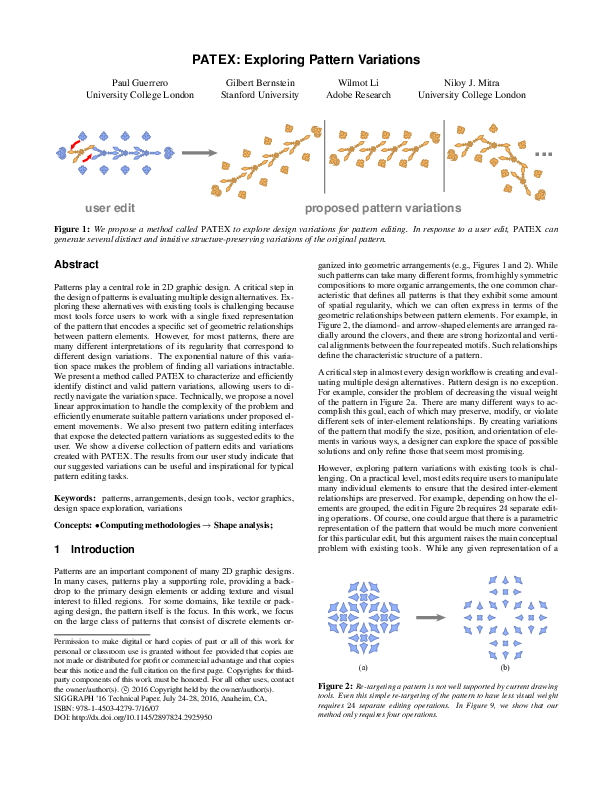 | PATEX: Exploring Pattern Variations
Paul Guerrero, Gilbert Bernstein, Wilmot Li, Niloy J. Mitra | | preprint | 2016 | Image | × | ✔️ | 5 |
× | | 2 | 11 | 0.25 |
| Perception-aware modeling and fabrication of digital drawing tools
Michal Piovarči, David I. W. Levin, Danny M. Kaufman, Piotr Didyk | | preprint | 2018 | Fabrication | × | ✔️ | 0 |
× | | 1 | 1 | |
| Perception-driven semi-structured boundary vectorization
Shayan Hoshyari, Edoardo Alberto Dominici, Alla Sheffer, Nathan Carr, Zhaowen Wang, Duygu Ceylan, I-Chao Shen | | preprint | 2018 | Image | × | ✔️ | 5 |
× | | 1 | 3 | |
| Perceptual Effect of Shoulder Motions on Crowd Animations
Ludovic Hoyet, Anne-Helene Olivier, Richard Kulpa, Julien Pettré | | preprint | 2016 | Animation | × | × | |
× | | 0 | 14 | |
 | Perspective-aware Manipulation of Portrait Photos
Ohad Fried, Eli Shechtman, Dan B. Goldman, Adam Finkelstein | | preprint | 2016 | Image | × | ✔️ | 5 |
× | | 0 | 24 | 97 |
| Physical Simulation of Environmentally Induced Thin Shell Deformation
Hsiao-Yu Chen, Arnav Sastry, Wim M. van Rees, Etienne Vouga | | preprint | 2018 | Animation | × | ✔️ | 1 |
× | | 0 | 2 | 0.75 |
| Physics-driven pattern adjustment for direct 3D garment editing
Aric Bartle, Alla Sheffer, Vladimir G. Kim, Danny M. Kaufman, Nicholas Vining, Floraine Berthouzoz | | preprint | 2016 | Fabrication | × | × | |
× | | 0 | 2 | |
| Physics-Inspired Adaptive Fracture Refinement
Zhili Chen, Miaojun Yao, Renguo Feng, Huamin Wang | | preprint | 2014 | Animation | × | × | |
× | | 0 | 24 | |
 | PiGraphs: Learning Interaction Snapshots from Observations
Manolis Savva, Angel X. Chang, Pat Hanrahan, Matthew Fisher, Matthias Nießner | | preprint | 2016 | Geometry | × | ✔️ | 5 |
× | | 2 | 37 | |
| Pinlight Displays: Wide Field of View Augmented Reality Eyeglasses using Defocused Point Light Sources
Andrew Maimone, Douglas Lanman, Kishore Rathinavel, Kurtis Keller, David Luebke, Henry Fuchs | | preprint | 2014 | Virtual Reality | × | × | |
× | | 0 | 128 | 16 |
| Pixie dust: graphics generated by levitated and animated objects in computational acoustic-potential field
Yoichi Ochiai, Takayuki Hoshi, Jun Rekimoto | | preprint | 2014 | Virtual Reality | × | × | |
× | | 0 | 114 | 6.5 |
| Point convolutional neural networks by extension operators
Matan Atzmon, Haggai Maron, Yaron Lipman | | preprint | 2018 | Geometry | × | ✔️ | 0 |
× | | 0 | 67 | |
| Point morphology
Stéphane Calderon, Tamy Boubekeur | | preprint | 2014 | Geometry | × | × | |
✔️ | 2 | 0 | 36 | |
| 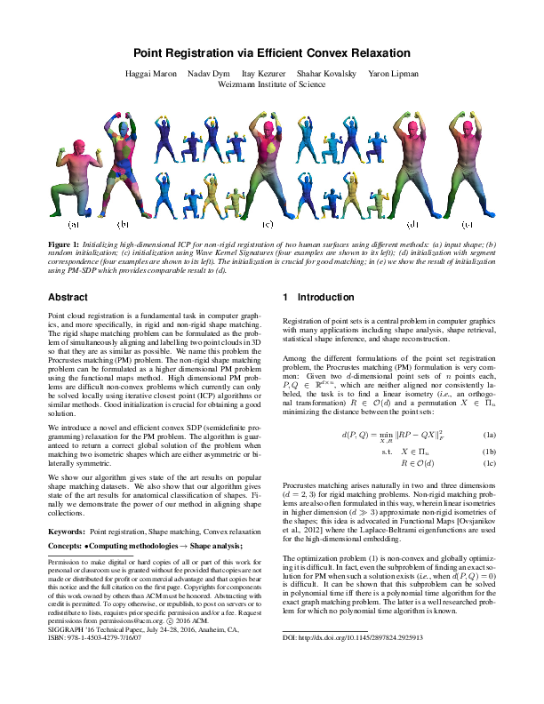 | Point Registration via Efficient Convex Relaxation
Haggai Maron, Nadav Dym, Itay Kezurer, Shahar Kovalsky, Yaron Lipman | | preprint | 2016 | Geometry | × | ✔️ | 5 |
× | | 2 | 40 | |
| Polyhedral Voronoi diagrams for additive manufacturing
Jonàs Martínez, Samuel Hornus, Haichuan Song, Sylvain Lefebvre | | preprint | 2018 | Fabrication | × | × | |
× | | 0 | 12 | |
| Pose-Space Subspace Dynamics
Hongyi Xu, Jernej Barbič | | preprint | 2016 | Animation | × | × | |
× | | 0 | 37 | |
| Position-Normal Distributions for Efficient Rendering of Specular Microstructure
Ling-Qi Yan, Miloš Hašan, Steve Marschner, Ravi Ramamoorthi | | preprint | 2016 | Rendering | × | × | |
× | | 0 | 31 | |
| Practical Multispectral Lighting Reproduction
Chloe LeGendre, Xueming Yu, Dai Liu, Jay Busch, Andrew Jones, Sumanta Pattanaik, Paul Debevec | | preprint | 2016 | Rendering | × | × | |
× | | 0 | 17 | |
| Predictive and generative neural networks for object functionality
Ruizhen Hu, Zihao Yan, Jingwen Zhang, Oliver Van Kaick, Ariel Shamir, Hao Zhang, Hui Huang | | preprint | 2018 | Geometry | × | ✔️ | 0 |
× | | 0 | 5 | |
| Preserving Geometry and Topology for Fluid Flows with Thin Obstacles and Narrow Gaps
Vinicius C. Azevedo, Christopher Batty, Manuel M. Oliveira | | preprint | 2016 | Animation | × | × | |
✔️ | 1 | 0 | 11 | |
| Printing Arbitrary Meshes with a 5DOF Wireframe Printer
Rundong Wu, Huaishu Peng, François Guimbretière, Steve Marschner | | preprint | 2016 | Fabrication | × | × | |
✔️ | 3 | 0 | 43 | 3 |
| Proactive 3D Scanning of Inaccessible Parts
Feilong Yan, Andrei Sharf, Wenzhen Lin, Hui Huang, Baoquan Chen | | preprint | 2014 | Geometry | × | × | |
× | | 0 | 22 | |
| Procedural Voronoi Foams for Additive Manufacturing
Jonàs Martínez, Jérémie Dumas, Sylvain Lefebvre | | preprint | 2016 | Fabrication | × | ✔️ | 1 |
× | | 0 | 73 | 7 |
| Progressive Parameterizations
Ligang Liu, Chunyang Ye, Ruiqi Ni, Xiao-Ming Fu | | preprint | 2018 | Geometry | ✔️ | ✔️ | 5 |
× | | 0 | 15 | |
| Projective Dynamics: Fusing Constraint Projections for Fast Simulation
Sofien Bouaziz, Sebastian Martin, Tiantian Liu, Ladislav Kavan, Mark Pauly | | preprint | 2014 | Animation | × | × | |
✔️ | 1 | 0 | 205 | |
| 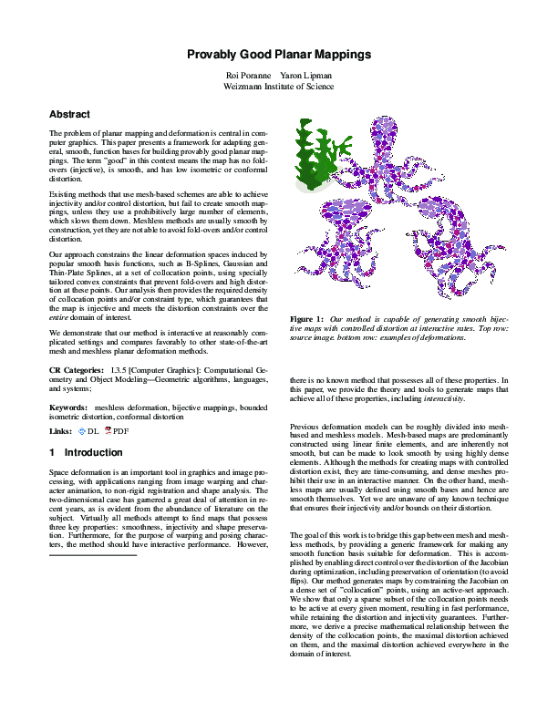 | Provably Good Planar Mappings
Roi Poranne, Yaron Lipman | | preprint | 2014 | Geometry | × | ✔️ | 3 |
× | | 1 | 35 | |
| ProxImaL: Efficient Image Optimization using Proximal Algorithms
Felix Heide, Steven Diamond, Matthias Nießner, Jonathan Ragan-Kelley, Wolfgang Heidrich, Gordon Wetzstein | | preprint | 2016 | Image | × | ✔️ | 3 |
× | | 1 | 41 | |
| Pteromys: Interactive Design and Optimization of Free-formed Free-flight Model Airplanes
Nobuyuki Umetani, Yuki Koyama, Ryan Schmidt, Takeo Igarashi | | preprint | 2014 | Fabrication | × | × | |
× | | 0 | 85 | 10 |
| PushPull++
Markus Lipp, Peter Wonka, Pascal Müller | | preprint | 2014 | Geometry | × | × | |
✔️ | 2 | 0 | 9 | |
| Quadrangulation through morse-parameterization hybridization
Xianzhong Fang, Hujun Bao, Yiying Tong, Mathieu Desbrun, Jin Huang | | preprint | 2018 | Geometry | × | ✔️ | 3 |
× | | 0 | 3 | |
| RAID: A Relation-Augmented Image Descriptor
Paul Guerrero, Niloy J. Mitra, Peter Wonka | | preprint | 2016 | Image | × | ✔️ | 5 |
× | | 1 | 11 | 3 |
| Rapid deployment of curved surfaces via programmable auxetics
Mina Konaković-Luković, Julian Panetta, Keenan Crane, Mark Pauly | | preprint | 2018 | Geometry | × | × | |
× | | 0 | 10 | |
| Real-time data-driven interactive rough sketch inking
Edgar Simo-Serra, Satoshi Iizuka, Hiroshi Ishikawa | | preprint | 2018 | Image | × | ✔️ | 4 |
× | | 1 | 11 | |
| Real-time Facial Animation with Image-based Dynamic Avatars
Chen Cao, Hongzhi Wu, Yanlin Weng, Tianjia Shao, Kun Zhou | | preprint | 2016 | Animation | × | × | |
✔️ | 1 | 0 | 87 | |
| Real-Time Non-Rigid Reconstruction Using an RGB-D Camera
Michael Zollhöfer, Christian Theobalt, Marc Stamminger, Matthias Nießner, Shahram Izadi, Christoph Rehmann, Christopher Zach, Matthew Fisher, Chenglei Wu, Andrew Fitzgibbon, Charles Loop | | preprint | 2014 | Animation | × | × | |
× | | 0 | 299 | 12.8 |
| Real-Time Polygonal-Light Shading with Linearly Transformed Cosines
Eric Heitz, Jonathan Dupuy, Stephen Hill, David Neubelt | | preprint | 2016 | Rendering | × | ✔️ | 4 |
× | | 1 | 38 | |
| Real-time Rendering on a Power Budget
Rui Wang, Bowen Yu, Julio Marco, Tianlei Hu, Diego Gutierrez, Hujun Bao | | preprint | 2016 | Rendering | × | × | |
× | | 0 | 12 | |
 | Real-time Skeletal Skinning with Optimized Centers of Rotation
Binh Huy Le, Jessica K. Hodgins | | preprint | 2016 | Animation | × | × | |
✔️ | 3 | 0 | 37 | |
| Realtime 3D Eye Gaze Animation Using a Single RGB Camera
Congyi Wang, Fuhao Shi, Shihong Xia, Jinxiang Chai | | preprint | 2016 | Animation | × | × | |
× | | 0 | 30 | |
| Reconstructing scenes with mirror and glass surfaces
Thomas Whelan, Michael Goesele, Steven J. Lovegrove, Julian Straub, Simon Green, Richard Szeliski, Steven Butterfield, Shobhit Verma, Richard Newcombe | | preprint | 2018 | Image | × | × | |
× | | 0 | 9 | |
| Reflectance Modeling by Neural Texture Synthesis
Miika Aittala, Timo Aila, Jaakko Lehtinen | | preprint | 2016 | Rendering | × | × | |
× | | 0 | 56 | |
| Reflectance scanning: estimating shading frame and BRDF with generalized linear light sources
Guojun Chen, Yue Dong, Pieter Peers, Jiawan Zhang, Xin Tong | | preprint | 2014 | Rendering | × | × | |
✔️ | 4 | 0 | 26 | |
| Relating shapes via geometric symmetries and regularities
Art Tevs, Qixing Huang, Michael Wand, Hans-Peter Seidel, Leonidas Guibas | | preprint | 2014 | Geometry | × | × | |
× | | 0 | 32 | |
| Rendering Glints on High-Resolution Normal-Mapped Specular Surfaces
Ling-Qi Yan, Miloš Hašan, Wenzel Jakob, Jason Lawrence, Steve Marschner, Ravi Ramamoorthi | | preprint | 2014 | Rendering | × | × | |
× | | 0 | 55 | |
| Rendering specular microgeometry with wave optics
Ling-Qi Yan, Miloš Hašan, Bruce Walter, Steve Marschner, Ravi Ramamoorthi | | preprint | 2018 | Rendering | × | ✔️ | 4 |
× | | 0 | 14 | |
| Resolving Fluid Boundary Layers with Particle Strength Exchange and Weak Adaptivity
Xinxin Zhang, Minchen Li, Robert Bridson | | preprint | 2016 | Animation | × | ✔️ | 5 |
× | | 0 | 9 | |
 | Rich360: optimized spherical representation from structured panoramic camera arrays
Jungjin Lee, Bumki Kim, Kyehyun Kim, Younghui Kim, Junyong Noh | | preprint | 2016 | Image | × | × | |
× | | 0 | 48 | |
| Rig Animation with a Tangible and Modular Input Device
Oliver Glauser, Benedek Vartok, Wan-Chun Ma, Daniele Panozzo, Alec Jacobson, Otmar Hilliges, Olga Sorkine-Hornung | | preprint | 2016 | Virtual Reality | × | ✔️ | 0 |
× | | 0 | 20 | |
| Rigel: Flexible Multi-Rate Image Processing Hardware
James Hegarty, Ross Daly, Zachary DeVito, Jonathan Ragan-Kelley, Mark Horowitz, Pat Hanrahan | | preprint | 2016 | Image | × | ✔️ | 3 |
× | | 1 | 32 | |
| Rigid Stabilization of Facial Expressions
Thabo Beeler, Derek Bradley | | preprint | 2014 | Animation | × | × | |
× | | 0 | 36 | 3 |
| Robust and Accurate Skeletal Rigging from Mesh Sequences
Binh Huy Le, Zhigang Deng | | preprint | 2014 | Animation | × | ✔️ | 2 |
× | | 1 | 73 | 3 |
 | Robust Field-Aligned Global Parametrization
Ashish Myles, Nico Pietroni, Denis Zorin | | preprint | 2014 | Geometry | × | × | |
× | | 0 | 77 | |
| Robust Hair Capture Using Simulated Examples
Liwen Hu, Chongyang Ma, Linjie Luo, Hao Li | | preprint | 2014 | Geometry | × | × | |
× | | 0 | 45 | |
| Robust optimization for topological surface reconstruction
Roee Lazar, Nadav Dym, Yam Kushinsky, Zhiyang Huang, Tao Ju, Yaron Lipman | | preprint | 2018 | Geometry | × | ✔️ | 2 |
× | | 1 | 4 | |
 | Robust solving of optical motion capture data by denoising
Daniel Holden | | preprint | 2018 | Animation | × | × | |
✔️ | 3 | 0 | 17 | |
| 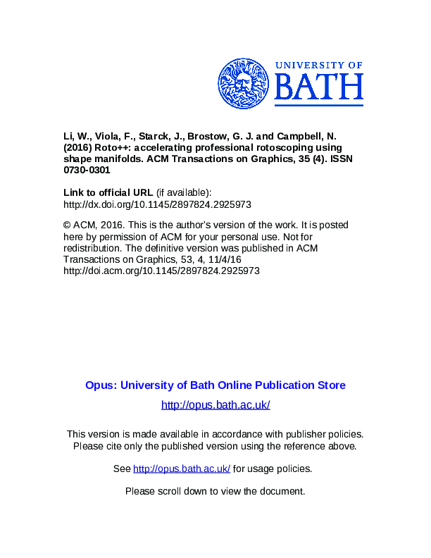 | Roto++: Accelerating Professional Rotoscoping using Shape Manifolds
Wenbin Li, Fabio Viola, Jonathan Starck, Gabriel J. Brostow, Neill D. F. Campbell | | preprint | 2016 | Image | × | ✔️ | 0 |
× | | 1 | 27 | 0.25 |
| Rule-free sewing pattern adjustment with precision and efficiency
Huamin Wang | | preprint | 2018 | Fabrication | × | × | |
× | | 0 | 14 | |
| Scalable laplacian eigenfluids
Qiaodong Cui, Pradeep Sen, Theodore Kim | | preprint | 2018 | Animation | × | ✔️ | 4 |
× | | 1 | 3 | |
| 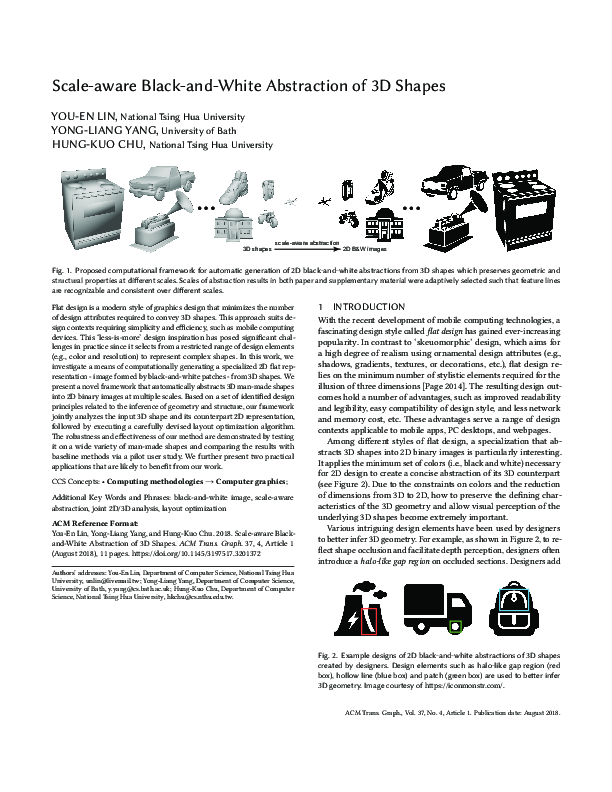 | Scale-aware black-and-white abstraction of 3D shapes
You-En Lin, Yong-Liang Yang, Hung-Kuo Chu | | preprint | 2018 | Rendering | × | ✔️ | 4 |
× | | 1 | 1 | |
| Scanner: efficient video analysis at scale
Alex Poms, Will Crichton, Pat Hanrahan, Kayvon Fatahalian | | preprint | 2018 | Image | × | ✔️ | 4 |
× | | 1 | 16 | 4 |
| Scene-aware audio for 360° videos
Dingzeyu Li, Timothy R. Langlois, Changxi Zheng | | preprint | 2018 | Animation | × | × | |
× | | 0 | 8 | 2 |
| Schrödinger's Smoke
Albert Chern, Felix Knöppel, Ulrich Pinkall, Peter Schröder, Steffen Weißmann | | preprint | 2016 | Animation | × | ✔️ | 5 |
× | | 1 | 21 | 10 |
| Seamless Visual Sharing with Color Vision Deficiencies
Wuyao Shen, Xiangyu Mao, Xinghong Hu, Tien-Tsin Wong | | preprint | 2016 | Virtual Reality | × | × | |
× | | 0 | 9 | 2.35 |
| Self-Refining Games using Player Analytics
Matt Stanton, Ben Humberston, Brandon Kase, James F. O'Brien, Kayvon Fatahalian, Adrien Treuille | | preprint | 2014 | Animation | × | × | |
× | | 0 | 17 | 3 |
| 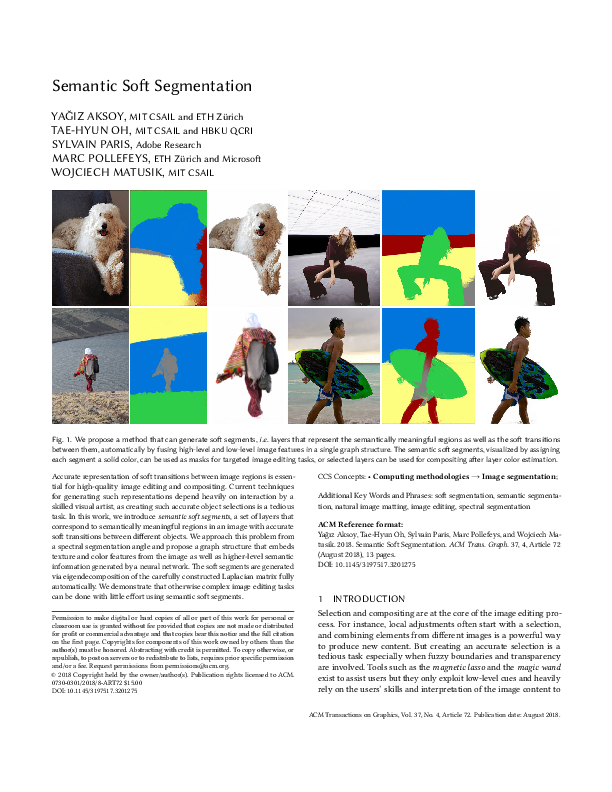 | Semantic soft segmentation
Yağiz Aksoy, Tae-Hyun Oh, Sylvain Paris, Marc Pollefeys, Wojciech Matusik | | preprint | 2018 | Image | × | ✔️ | 4 |
× | | 2 | 24 | 17.16 |
 | Sensitivity-optimized Rigging for Example-based Real-time Clothing Synthesis
Weiwei Xu, Nobuyuki Umentani, Qianwen Chao, Jie Mao, Xiaogang Jin, Xin Tong | | preprint | 2014 | Animation | × | × | |
× | | 0 | 35 | |
| Shadow Theatre: Discovering Human Motion from a Sequence of Silhouettes
Jungdam Won, Jehee Lee | | preprint | 2016 | Fabrication | × | × | |
✔️ | 1 | 0 | 11 | |
| Shape from Metric
Albert Chern, Felix Knöppel, Ulrich Pinkall, Peter Schröder | | preprint | 2018 | Geometry | × | ✔️ | 4 |
× | | 1 | 9 | |
| 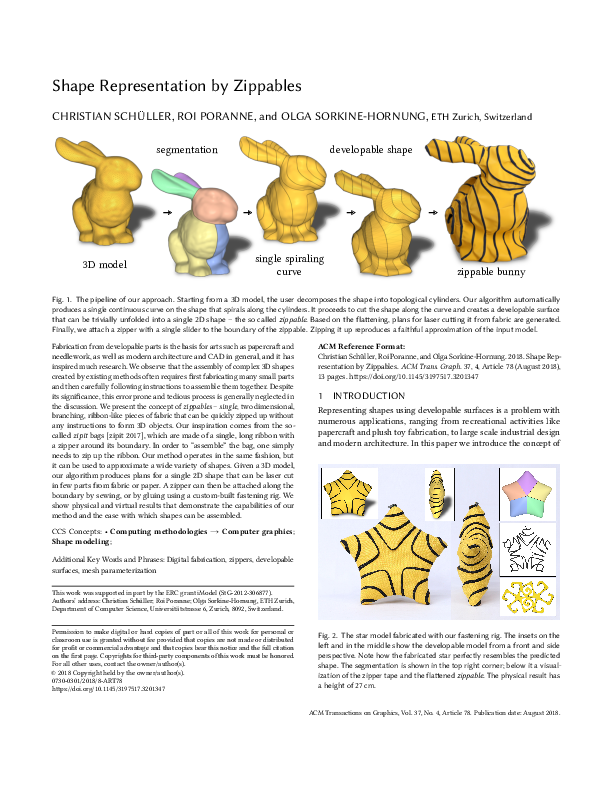 | Shape Representation by Zippables
Christian Schüller, Roi Poranne, Olga Sorkine-Hornung | | preprint | 2018 | Fabrication | × | × | |
× | | 0 | 4 | |
| 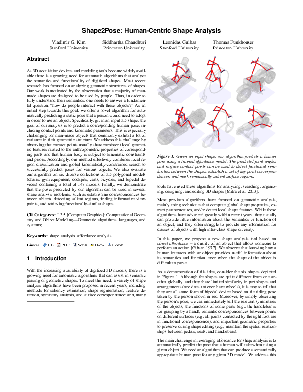 | Shape2Pose: Human-Centric Shape Analysis
Vladimir G. Kim, Siddhartha Chaudhuri, Leonidas Guibas, Thomas Funkhouser | | preprint | 2014 | Geometry | × | ✔️ | 0 |
× | | 1 | 89 | |
| 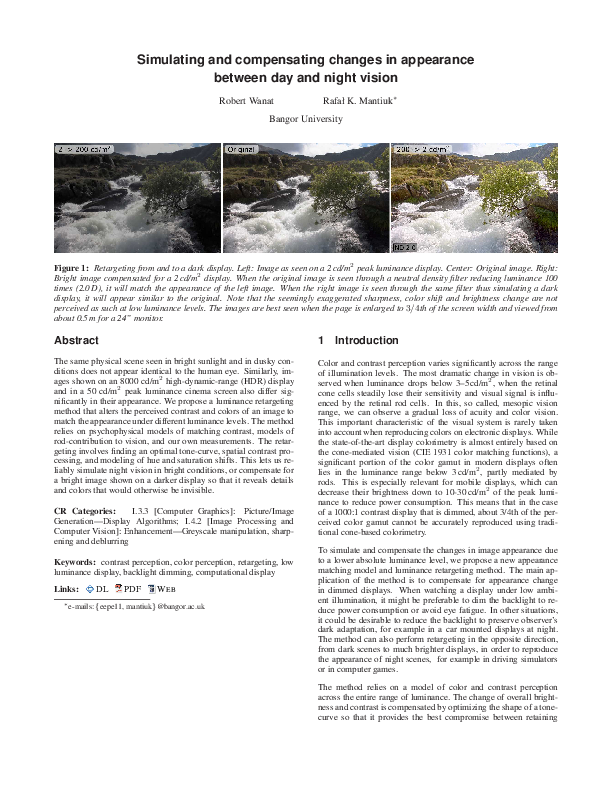 | Simulating and compensating changes in appearance between day and night vision
Robert Wanat, Rafał K. Mantiuk | | preprint | 2014 | Image | × | × | |
× | | 0 | 42 | 6 |
| Simulating articulated subspace self-contact
Yun Teng, Miguel A. Otaduy, Theodore Kim | | preprint | 2014 | Animation | × | × | |
× | | 0 | 29 | |
| Single-image SVBRDF capture with a rendering-aware deep network
Valentin Deschaintre, Miika Aittala, Fredo Durand, George Drettakis, Adrien Bousseau | | preprint | 2018 | Rendering | × | × | |
× | | 0 | 34 | 2.85 |
 | Single-photon 3D imaging with deep sensor fusion
David B. Lindell, Matthew O'Toole, Gordon Wetzstein | | preprint | 2018 | Image | × | ✔️ | 1 |
× | | 1 | 24 | |
| Singularity-constrained octahedral fields for hexahedral meshing
Heng Liu, Paul Zhang, Edward Chien, Justin Solomon, David Bommes | | preprint | 2018 | Geometry | × | × | |
✔️ | 2 | 0 | 17 | |
| Skaterbots: Optimization-based Design and Motion Synthesis for Robotic Creatures with Legs and Wheels
Moritz Geilinger, Roi Poranne, Ruta Desai, Bernhard Thomaszewski, Stelian Coros | | preprint | 2018 | Animation | × | × | |
× | | 0 | 15 | 5.08 |
| SketchiMo: Sketch-based Motion Editing for Articulated Characters
Byungkuk Choi, Roger Blanco i Ribera, J. P. Lewis, Yeongho Seol, Seokpyo Hong, Haegwang Eom, Sunjin Jung, Junyong Noh | | preprint | 2016 | Animation | × | × | |
× | | 0 | 16 | |
| Sky is Not the Limit: Semantic-Aware Sky Replacement
Yi-Hsuan Tsai, Xiaohui Shen, Zhe Lin, Kalyan Sunkavalli, Ming-Hsuan Yang | | preprint | 2016 | Image | × | ✔️ | 5 |
× | | 0 | 31 | |
| 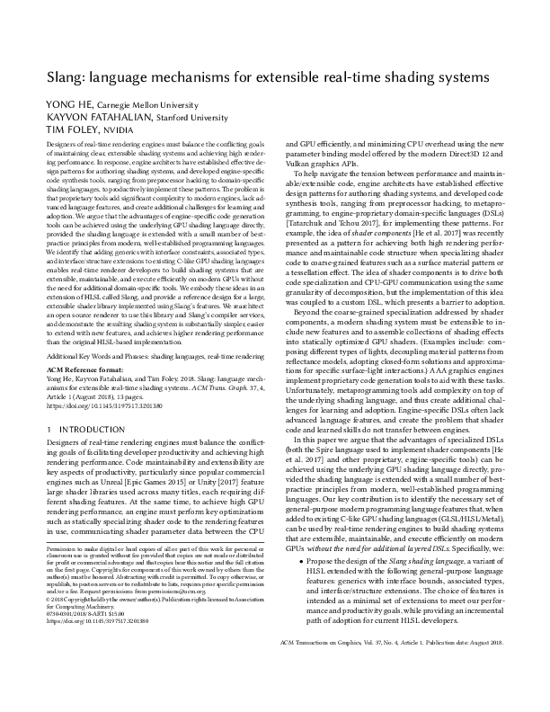 | Slang: language mechanisms for extensible real-time shading systems
Yong He, Kayvon Fatahalian, Tim Foley | | preprint | 2018 | Rendering | × | ✔️ | 3 |
× | | 2 | 3 | |
| Smoke Rings from Smoke
Steffen Weißmann, Ulrich Pinkall, Peter Schröder | | preprint | 2014 | Animation | × | ✔️ | 4 |
× | | 1 | 17 | |
| Soli: Ubiquitous Gesture Sensing with Millimeter Wave Radar
Jaime Lien, Nicholas Gillian, M. Emre Karagozler, Patrick Amihood, Carsten Schwesig, Erik Olson, Hakim Raja, Ivan Poupyrev | | preprint | 2016 | Virtual Reality | × | × | |
× | | 0 | 238 | 19 |
| Space-Time Editing of Elastic Motion through Material Optimization and Reduction
Siwang Li, Jin Huang, Fernando de Goes, Xiaogang Jin, Hujun Bao, Mathieu Desbrun | | preprint | 2014 | Animation | × | × | |
× | | 0 | 68 | 6.25 |
| 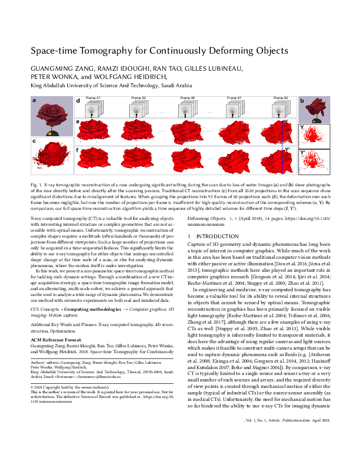 | Space-time tomography for continuously deforming objects
Guangming Zang, Ramzi Idouchi, Ran Tao, Gilles Lubineau, Peter Wonka, Wolfgang Heidrich | | preprint | 2018 | Animation | × | ✔️ | 1 |
× | | 1 | 9 | |
| Spectral Style Transfer for Human Motion between Independent Actions
M. Ersin Yumer, Niloy J. Mitra | | preprint | 2016 | Animation | × | × | |
× | | 0 | 35 | 0.25 |
| Spin-It: Optimizing Moment of Inertia for Spinnable Objects
Moritz Bächer, Emily Whiting, Bernd Bickel, Olga Sorkine-Hornung | | preprint | 2014 | Fabrication | × | × | |
✔️ | 2 | 0 | 144 | 5 |
| Stereo magnification: learning view synthesis using multiplane images
Tinghui Zhou, Richard Tucker, John Flynn, Graham Fyffe, Noah Snavely | | preprint | 2018 | Image | × | ✔️ | 5 |
× | | 2 | 47 | |
| Stitch Meshing
Kui Wu, Xifeng Gao, Zachary Ferguson, Daniele Panozzo, Cem Yuksel | | preprint | 2018 | Fabrication | × | ✔️ | 3 |
× | | 1 | 10 | |
| 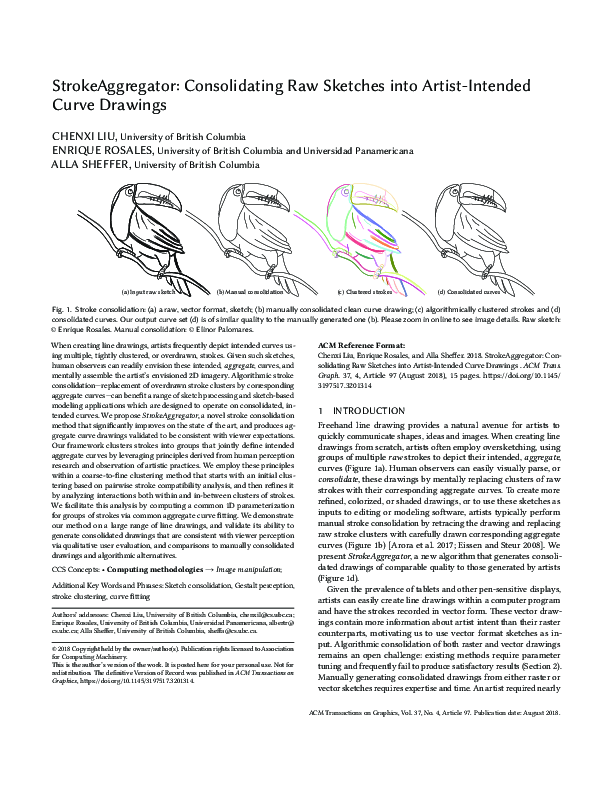 | StrokeAggregator: consolidating raw sketches into artist-intended curve drawings
Chenxi Liu, Enrique Rosales, Alla Sheffer | | preprint | 2018 | Image | × | ✔️ | 5 |
× | | 1 | 10 | |
 | Style Transfer for Headshot Portraits
YiChang Shih, Sylvain Paris, Connelly Barnes, William T. Freeman, Frédo Durand | | preprint | 2014 | Image | × | ✔️ | 4 |
× | | 1 | 126 | 6 |
| 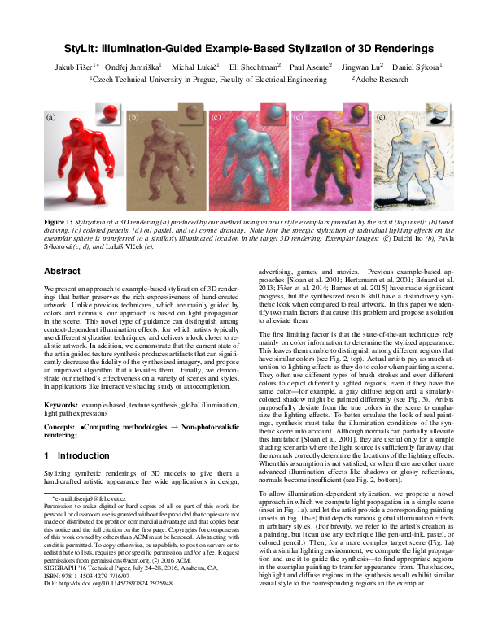 | StyLit: illumination-guided example-based stylization of 3D renderings
Jakub Fišer, Ondřej Jamriška, Michal Lukáč, Eli Shechtman, Paul Asente, Jingwan Lu, Daniel Sýkora | | preprint | 2016 | Rendering | × | ✔️ | 5 |
× | | 1 | 47 | |
| Subdivision Exterior Calculus for Geometry Processing
Fernando de Goes, Mathieu Desbrun, Mark Meyer, Tony DeRose | | preprint | 2016 | Geometry | × | × | |
× | | 0 | 23 | |
| Subspace Clothing Simulation Using Adaptive Bases
Fabian Hahn, Bernhard Thomaszewski, Stelian Coros, Robert W. Sumner, Forrester Cole, Mark Meyer, Tony DeRose, Markus Gross | | preprint | 2014 | Animation | × | × | |
✔️ | 1 | 0 | 51 | 3 |
| Support-free volume printing by multi-axis motion
Chengkai Dai, Charlie C. L. Wang, Chenming Wu, Sylvain Lefebvre, Guoxin Fang, Yong-Jin Liu | | preprint | 2018 | Fabrication | × | ✔️ | 4 |
× | | 1 | 27 | |
| Surface-Only Liquids
Fang Da, David Hahn, Christopher Batty, Chris Wojtan, Eitan Grinspun | | preprint | 2016 | Animation | × | ✔️ | 3 |
× | | 0 | 19 | |
| Synthesis of Filigrees for Digital Fabrication
Weikai Chen, Xiaolong Zhang, Shiqing Xin, Yang Xia, Sylvain Lefebvre, Wenping Wang | | preprint | 2016 | Fabrication | × | × | |
✔️ | 1 | 0 | 28 | 7 |
| Synthetic depth-of-field with a single-camera mobile phone
Neal Wadhwa, Marc Levoy, Rahul Garg, David E. Jacobs, Bryan E. Feldman, Nori Kanazawa, Robert Carroll, Yair Movshovitz-Attias, Jonathan T. Barron, Yael Pritch | | preprint | 2018 | Image | × | × | |
× | | 0 | 21 | 99.28 |
| Tactile Mesh Saliency
Manfred Lau, Kapil Dev, Weiqi Shi, Julie Dorsey, Holly Rushmeier | | preprint | 2016 | Virtual Reality | × | × | |
× | | 0 | 21 | |
| 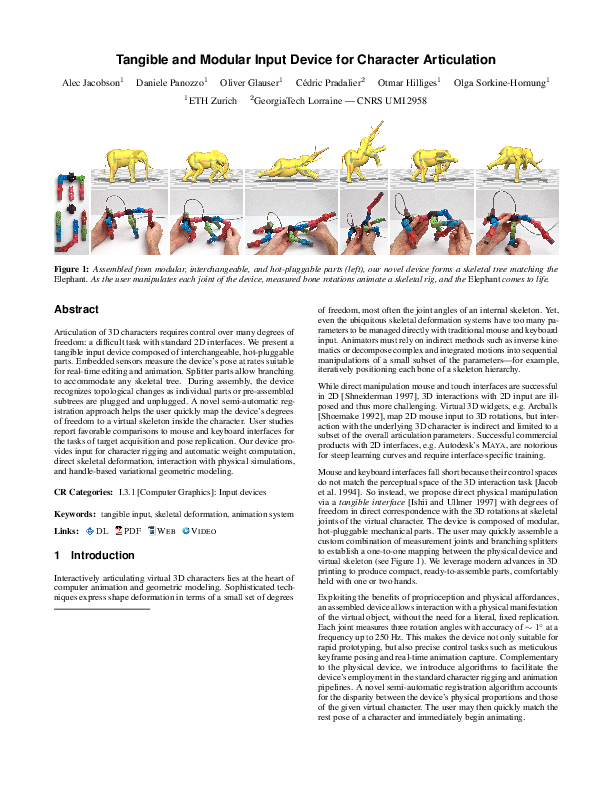 | Tangible and Modular Input Device for Character Articulation
Alec Jacobson, Daniele Panozzo, Oliver Glauser, Cédric Pradalier, Otmar Hilliges, Olga Sorkine-Hornung | | preprint | 2014 | Virtual Reality | × | ✔️ | 0 |
× | | 2 | 70 | |
| 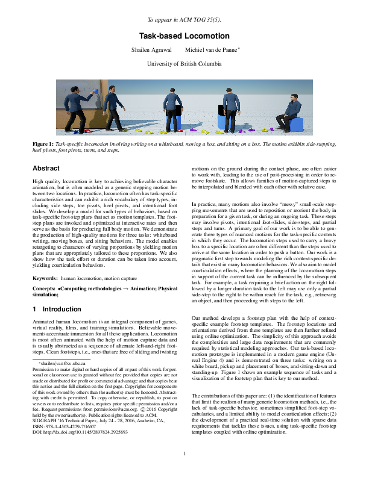 | Task-based Locomotion
Shailen Agrawal, Michiel van de Panne | | preprint | 2016 | Animation | × | × | |
✔️ | 1 | 0 | 20 | |
 | tempoGAN: a temporally coherent, volumetric GAN for super-resolution fluid flow
You Xie, Erik Franz, Mengyu Chu, Nils Thuerey | | preprint | 2018 | Animation | × | ✔️ | 5 |
× | | 1 | 53 | |
| Temporal Frequency Probing for 5D Analysis of Global Light Transport
Matthew O'Toole, Felix Heide, Lei Xiao, Matthias B. Hullin, Wolfgang Heidrich, Kiriakos N. Kutulakos | | preprint | 2014 | Rendering | × | × | |
× | | 0 | 77 | 3 |
| 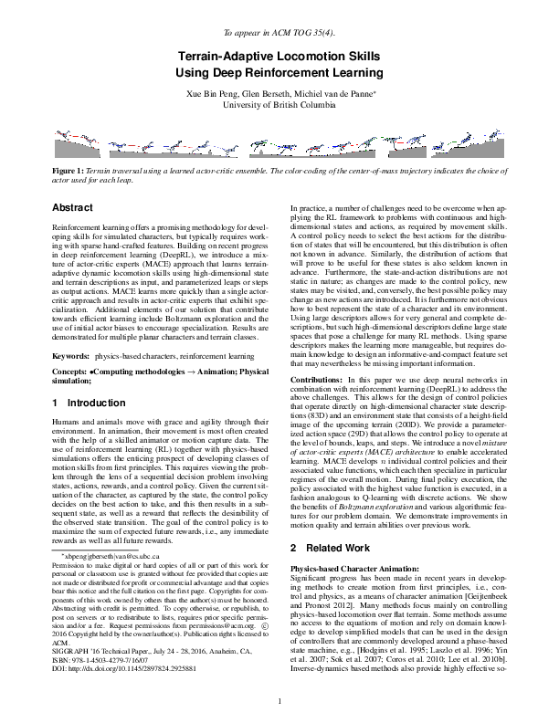 | Terrain-Adaptive Locomotion Skills Using Deep Reinforcement Learning
Xue Bin Peng, Glen Berseth, Michiel van de Panne | | preprint | 2016 | Animation | × | ✔️ | 1 |
× | | 0 | 143 | |
| Tetrahedral meshing in the wild
Yixin Hu, Qingnan Zhou, Xifeng Gao, Alec Jacobson, Denis Zorin, Daniele Panozzo | | preprint | 2018 | Geometry | ✔️ | ✔️ | 5 |
× | | 1 | 34 | |
| The Connect-The-Dots Family of Puzzles: Design and Automatic Generation
Maarten Löffler, Mira Kaiser, Tim van Kapel, Gerwin Klappe, Marc van Kreveld, Frank Staals | | preprint | 2014 | Geometry | × | × | |
× | | 0 | 9 | |
| The Diffractive Achromat: Full Spectrum Computational Imaging with Diffractive Optics
Yifan Peng, Qiang Fu, Felix Heide, Wolfgang Heidrich | | preprint | 2016 | Image | × | × | |
✔️ | 2 | 0 | 29 | 28 |
| The human touch: measuring contact with real human soft tissues
Dinesh K. Pai, Austin Rothwell, Pearson Wyder-Hodge, Alistair Wick, Ye Fan, Egor Larionov, Darcy Harrison, Debanga Raj Neog, Cole Shing | | preprint | 2018 | Animation | × | × | |
× | | 0 | 6 | |
| 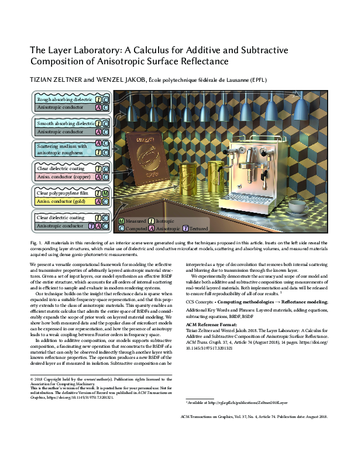 | The layer laboratory: a calculus for additive and subtractive composition of anisotropic surface reflectance
Tizian Zeltner, Wenzel Jakob | | preprint | 2018 | Rendering | × | ✔️ | 5 |
× | | 1 | 8 | |
| The Natural-Constraint Representation of the Path Space for Efficient Light Transport Simulation
Anton S. Kaplanyan, Johannes Hanika, Carsten Dachsbacher | | preprint | 2014 | Rendering | × | × | |
✔️ | 2 | 0 | 35 | |
| 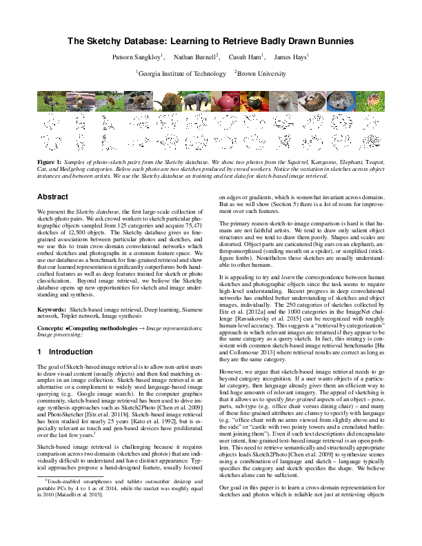 | The Sketchy Database: Learning to Retrieve Badly Drawn Bunnies
Patsorn Sangkloy, Nathan Burnell, Cusuh Ham, James Hays | | preprint | 2016 | Image | × | ✔️ | 4 |
× | | 2 | 186 | |
 | The Visual Microphone: Passive Recovery of Sound from Video
Abe Davis, Michael Rubinstein, Neal Wadhwa, Gautham J. Mysore, Frédo Durand, William T. Freeman | | preprint | 2014 | Image | × | ✔️ | 3 |
× | | 1 | 200 | 98.43 |
| Time-varying Weathering in Texture Space
Rachele Bellini, Yanir Kleiman, Daniel Cohen-Or | | preprint | 2016 | Image | × | × | |
× | | 0 | 17 | 3 |
| Toonsynth: example-based synthesis of hand-colored cartoon animations
Marek Dvorožnák, Wilmot Li, Vladimir G. Kim, Daniel Sýkora | | preprint | 2018 | Image | × | × | |
× | | 0 | 5 | |
| 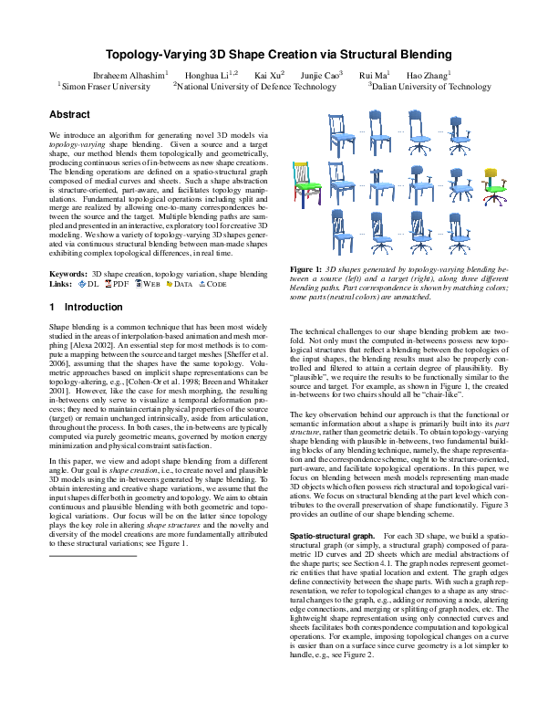 | Topology-Varying 3D Shape Creation via Structural Blending
Ibraheem Alhashim, Honghua Li, Kai Xu, Junjie Cao, Rui Ma, Hao Zhang | | preprint | 2014 | Geometry | × | ✔️ | 5 |
× | | 1 | 62 | |
| Toward Animating Water with Complex Acoustic Bubbles
Timothy R. Langlois, Changxi Zheng, Doug L. James | | preprint | 2016 | Animation | × | ✔️ | 2 |
× | | 1 | 26 | |
| Toward wave-based sound synthesis for computer animation
Jui-Hsien Wang, Ante Qu, Timothy R. Langlois, Doug L. James | | preprint | 2018 | Animation | × | × | |
× | | 0 | 13 | |
| 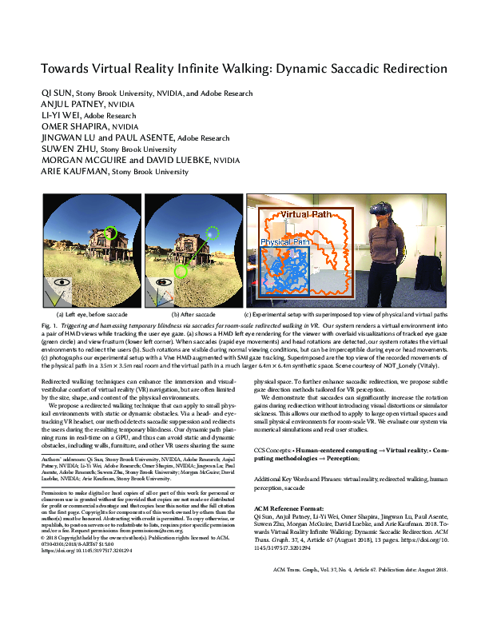 | Towards virtual reality infinite walking: dynamic saccadic redirection
Qi Sun, Arie Kaufman, Anjul Patney, Li-Yi Wei, Omer Shapira, Jingwan Lu, Paul Asente, Suwen Zhu, Morgan Mcguire, David Luebke | | preprint | 2018 | Virtual Reality | × | × | |
✔️ | 1 | 0 | 36 | |
| Transfiguring Portraits
Ira Kemelmacher-Shlizerman | | preprint | 2016 | Image | × | × | |
× | | 0 | 46 | 122 |
 | Transient Attributes for High-Level Understanding and Editing of Outdoor Scenes
Pierre-Yves Laffont, Zhile Ren, Xiaofeng Tao, Chao Qian, James Hays | | preprint | 2014 | Image | × | ✔️ | 3 |
× | | 2 | 148 | |
| True2Form: 3D Curve Networks from 2D Sketches via Selective Regularization
Baoxuan Xu, William Chang, Alla Sheffer, Adrien Bousseau, James McCrae, Karan Singh | | preprint | 2014 | Geometry | × | × | |
× | | 0 | 111 | |
 | Unified Motion Planner for Fishes with Various Swimming Styles
Daiki Satoi, Mikihiro Hagiwara, Akira Uemoto, Hisanao Nakadai, Junichi Hoshino | | preprint | 2016 | Animation | × | × | |
× | | 0 | 5 | |
| Unified Particle Physics for Real-Time Applications
Miles Macklin, Matthias Müller, Nuttapong Chentanez, Tae-Yong Kim | | preprint | 2014 | Animation | × | × | |
✔️ | 3 | 0 | 279 | 2.7 |
| 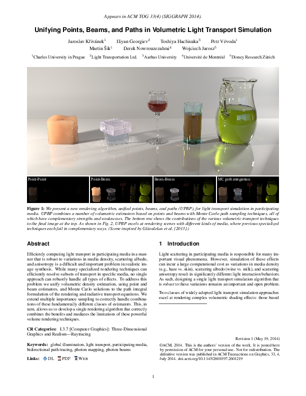 | Unifying points, beams, and paths in volumetric light transport simulation
Jaroslav Křivánek, Iliyan Georgiev, Toshiya Hachisuka, Petr Vévoda, Martin Šik, Derek Nowrouzezahrai, Wojciech Jarosz | | preprint | 2014 | Rendering | × | × | |
× | | 0 | 66 | |
| Variational surface cutting
Nicholas Sharp, Keenan Crane | | preprint | 2018 | Geometry | × | ✔️ | 5 |
× | | 1 | 7 | |
| Vector Graphics Complexes
Boris Dalstein, Rémi Ronfard, Michiel van de Panne | | preprint | 2014 | Image | × | ✔️ | 5 |
× | | 1 | 20 | |
| VideoSnapping: Interactive Synchronization of Multiple Videos
Oliver Wang, Christopher Schroers, Henning Zimmer, Markus Gross, Alexander Sorkine-Hornung | | preprint | 2014 | Image | × | × | |
✔️ | 1 | 0 | 48 | |
| 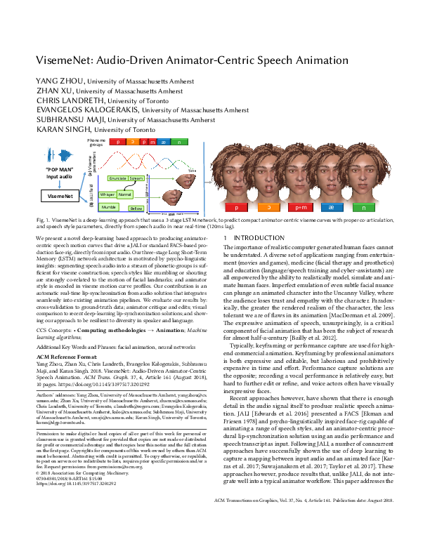 | VisemeNet: Audio-Driven Animator-Centric Speech Animation
Yang Zhou, Zhan Xu, Chris Landreth, Evangelos Kalogerakis, Subhransu Maji, Karan Singh | | preprint | 2018 | Animation | × | ✔️ | 4 |
× | | 1 | 13 | |
| 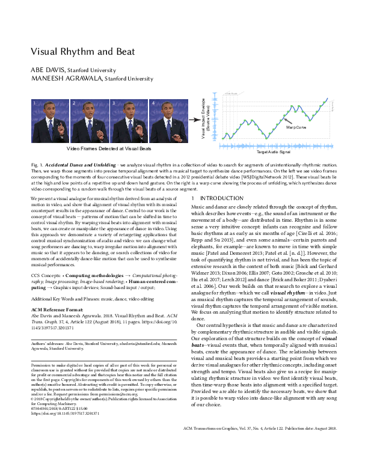 | Visual Rhythm and Beat
Abe Davis, Maneesh Agrawala | | preprint | 2018 | Image | × | ✔️ | 4 |
× | | 1 | 4 | |
| Volume-encoded UV-maps
Marco Tarini | | preprint | 2016 | Geometry | × | ✔️ | 1 |
× | | 0 | 15 | |
| Voxel Cores: Efficient, robust, and provably good approximation of 3D medial axes
Yajie Yan, David Letscher, Tao Ju | | preprint | 2018 | Geometry | × | ✔️ | 5 |
× | | 1 | 6 | |
| Wasserstein Barycentric Coordinates: Histogram Regression Using Optimal Transport
Nicolas Bonneel, Gabriel Peyré, Marco Cuturi | | preprint | 2016 | Image | × | ✔️ | 3 |
× | | 2 | 53 | |
| Water surface wavelets
Stefan Jeschke, Tomáš Skřivan, Matthias Müller-Fischer, Nuttapong Chentanez, Miles Macklin, Chris Wojtan | | preprint | 2018 | Animation | × | × | |
× | | 0 | 4 | 45.08 |
 | What characterizes personalities of graphic designs?
Nanxuan Zhao, Ying Cao, Rynson W. H. Lau | | preprint | 2018 | Image | × | ✔️ | 0 |
× | | 0 | 10 | |
| Wire Mesh Design
Akash Garg, Andrew O. Sageman-Furnas, Bailin Deng, Yonghao Yue, Eitan Grinspun, Mark Pauly, Max Wardetzky | | preprint | 2014 | Fabrication | × | × | |
× | | 0 | 58 | |
| ZoeMatrope: a system for physical material design
Leo Miyashita, Kota Ishihara, Yoshihiro Watanabe, Masatoshi Ishikawa | | ACM only | 2016 | Virtual Reality | × | × | |
× | | 0 | 15 | |